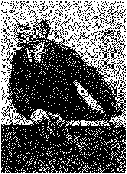

V. I. LENINTHE STATE
|  |
The present English translation of V. I. Lenin's The State and Revolution is a reprint of the text given in the Selected Works of V. I. Lenin, Eng. ed., Foreign Languages Publishing House, Moscow, 1952, Vol II, Part I. The notes at the end of the book are based on those given in the Selected Works and in the Chinese edition published by the People's Publishing House, Peking, in September 1964.
|
PREFACE TO THE FIRST EDITION |
1 | |
|
PREFACE TO THE SECOND EDITION |
4 | |
|
Chapter I |
| |
|
The State as the Product of the Irreconcilability of
Class |
| |
|
Chapter II |
| |
|
The Eve of the Revolution |
26 | |
|
Chapter III |
| |
|
Wherein Lay the Heroism of the Communards' Attempt? |
42 | |
|
Chapter IV |
| |
|
The Housing Question |
67 | |
|
Chapter V |
| |
|
Presentation of the Question by Marx |
99 | |
|
Chapter VI |
| |
|
Plekhonov's Controversy with the Anarchists |
124 | |
|
POSTSCRIPT TO THE FIRST EDITION |
145 | |
|
146 | ||
page 1
The question of the state is now acquiring particular importance both in
theory and in practical politics. The imperialist war has immensely
accelerated and intensified the process of transformation of monopoly
capitalism into state-monopoly capitalism. The monstrous oppression of the
toiling masses by the state, which is merging more and more with the all-powerful capitalist associations, is becoming ever more monstrous. The advanced countries are being converted -- we speak here of their "rear" -- into military convict prisons for the workers.
The unprecedented horrors and miseries of the protracted war are making the position of the masses unbearable and increasing their indignation. The international proletarian revolution is clearly maturing. The question of its relation to the state is acquiring practical importance.
The elements of opportunism that accumulated during the decades of comparatively peaceful development have given rise to the trend of social-chauvinism which dominates the official socialist parties throughout the world. This trend -- Socialism in words and chauvinism in deeds (Plekhanov, Potresov, Breshkovskaya, Rubanovich, and, in a
page 2
slightly veiled form, Messrs. Tsereteli, Chernov and Co., in Russia; Scheidemann, Legien, David and others in Germany; Renaudel, Guesde and Vandervelde in France and Belgium; Hyndman and the Fabians[2] in England, etc., etc.) -- is distinguished by the base, servile adaptation of the "leaders of socialism" to the interests not only of "their" national bourgeoisie, but precisely of "their" state --for the majority of the so-called Great Powers have long been exploiting and enslaving a whole number of small and weak nationalities. And the imperialist war is precisely a war for the division and redivision of this kind of booty. The struggle for the emancipation of the toiling masses from the influence of the bourgeoisie in general, and of the imperialist bourgeoisie in particular, is impossible without a struggle against opportunist prejudices concerning the "state."
First of all we examine the teachings of Marx and Engels on the state and dwell in particular detail on those aspects of this teaching which have been forgotten or have been subjected to opportunist distortion. Then we deal specially with the one who is chiefly responsible for these distortions, Karl Kautsky, the best-known leader of the Second International (1889-1914), which has met with such miserable bankruptcy in the present war. Finally, we shall sum up the main results of the experiences of the Russian revolutions of 1905 and particularly of 1917. Apparently, the latter is now (the beginning of August 1917) completing the first stage of its development; but this revolution as a whole can only be understood as a link in a chain of socialist proletarian revolutions being called forth by the imperialist war. Hence, the question of the relation of the socialist proletarian
page 3
revolution to the state acquires not only practical political importance but also the importance of a most urgent problem of the day, the problem of explaining to the masses what they will have to do in the very near future to free themselves from themselves from the yoke of capitalism.
The Author
August 1917
page 4
The present, second edition is published almost without change, except that section 3 had been added to Chapter II.
The Author
Moscow
page 5
CLASS SOCIETY AND THE STATE
1. THE STATE AS THE PRODUCT
What is now happening to Marx's teaching has, in the course of history, happened repeatedly to the teachings of revolutionary thinkers and leaders of oppressed classes struggling for emancipation. During the lifetime of great revolutionaries, the oppressing classes constantly hounded them, received their teachings with the most savage malice, the most furious hatred and the most unscrupulous campaigns of lies and slander. After their death, attempts are made to convert them into harmless icons, to canonize them, so to say, and to surround their names with a certain halo for the "consolation" of the oppressed classes and with the object of duping the latter, while at the same time emasculating the essence of the revolutionary teaching, blunting its revolutionary edge and vulgarizing it. At the present time, the bourgeoisie and the opportunists within the working-class
page 6
movement concur in this "doctoring" of Marxism. They omit, obliterate and distort the revolutionary side of this teaching, its revolutionary soul. They push to the foreground and extol what is or seems acceptable to the bourgeoisie. All the social-chauvinists are now "Marxists" (don't laugh!). And more and more frequently, German bourgeois scholars, but yesterday specialists in the annihilation of Marxism, are speaking of the "national-German" Marx, who, they aver, educated the workers' unions which are so splendidly organized for the purpose of conducting a predatory war!
In such circumstances, in view of the unprecedently widespread distortion of Marxism, our prime task is to re-establish what Marx really taught on the subject of the state. For this purpose it will be necessary to quote at length from the works of Marx and Engels themselves. Of course, long quotations will render the text cumbersome and will not help at all to make it popular reading, but we cannot possibly avoid them. All, or at any rate, all the most essential passages in the works of Marx and Engels on the subject of the state must without fail be quoted as fully as possible, in order that the reader may form an independent opinion of the totality of the views of the founders of scientific Socialism and of the development of those views, and in order that their distortion by the now prevailing "Kautskyism" may be documentarily proved and clearly demonstrated.
Let us being with the most popular of Engels' works, The Origin of the Family, Private Property and the State, the sixth edition of which was published in Stuttgart as far back as 1894. We shall have to translate the quotations from the German originals, as the Russian translations, although very numerous, are for the most part either incomplete or very unsatisfactory.
page 7
Summing up his historical analysis, Engels says:
"The state is, therefore, by no means a power forced on society from without; just as little is it 'the reality of the ethical idea,' 'the image and reality of reason,' as Hegel maintains. Rather, it is a product of society at a certain stage of development; it is the admission that this society has become entangled in an insoluble contradiction with itself, that it has cleft into irreconcilable antagonisms which it is powerless to dispel. But in order that these antagonisms, classes with conflicting economic interests, might not consume themselves and society in sterile struggle, a power, seemingly standing above society became necessary for the purpose of moderating the conflict, of keeping it within bounds of 'order'; and this power, arisen out of society, but placing itself above it, and increasingly alienating itself more and more from it, is the state." (Pp.177-78, sixth German edition)[3]
This expresses with perfect clarity the basic idea of Marxism with on the question of the historical role and the meaning of the state. The state is the product and the manifestation of the irreconcilability of class antagonisms. The state arises when, where and to the extent that class antagonisms objectively cannot be reconciled. And, conversely, the existence of the state proves that the class antagonisms are irreconcilable.
It is precisely on this most important and fundamental point that the distortion of Marxism, proceeding along two main lines, begins.
On the one hand, the bourgeois, and particularly the petty-bourgeois, ideologists, compelled under the weight of indisputable historical facts to admit that the state only exists where there are class antagonisms and the class struggle, "correct"
page 8
Marx in such a way as to make it appear that the state is an organ for the reconciliation of classes. According to Marx, the state could neither arise nor maintain itself if it were possible to reconcile classes. According to the petty-bourgeois and philistine professors and publicists it appears -- very frequently they benignantly refer to Marx to prove this -- that the state does reconcile classes. According to Marx, the state is an organ of class rule, an organ for the oppression of one class by another; it is the creation of "order," which legalizes and perpetuates this oppression by moderating the conflict between classes. In the opinion of the petty-bourgeois politicians, order means precisely the reconciliation of classes, and not the oppression of one class by another; to moderate the conflict means reconciling classes and not depriving the oppressed classes of definite means and methods of struggle to overthrow the oppressors.
For instance, when, in the Revolution of 1917, the question of the significance and role of the state arose in all its magnitude as a practical question demanding immediate action on a mass scale, all the Social-Revolutionaries and Mensheviks immediately and completely sank to the petty-bourgeois theory that the "state" "reconciles" classes. Innumerable resolutions and articles by politicians of both these parties are thoroughly saturated with this petty-bourgeois and philistine "reconciliation" theory. That the state is an organ of the rule of a definite class which cannot be reconciled with its antipode (the class opposite to it), is something the petty-bourgeois democrats will never be able to understand. Their attitude to the state is one of the most striking manifestations of the fact that our Socialist-Revolutionaries and Mensheviks are not Socialists at all
page 9
(a point that we Bolsheviks have always maintained), but petty-bourgeois democrats with near-Socialist phraseology.
On the other hand, the "Kautskyite" distortion of Marxism is far more subtle. "Theoretically," it is not denied that the state is an organ of class rule, or that class antagonisms are irreconcilable. But what is lost sight of or glossed over is this: if the state is the product of the irreconcilability of class antagonisms, if it is a power standing above society and "i n c r e a s i n g l y a l i e n a t i n g itself from it," then it is obvious that the liberation of the oppressed class is impossible not only without a violent revolution, b u t a l s o w i t h o u t t h e d e s t r u c t i o n of the apparatus of state power which was created by the ruling class and which is the embodiment of this "alienation." As we shall see later, Marx very definitely drew this theoretically self-evident conclusion as a result of a concrete historical analysis of the tasks of the revolution. And -- as we shall show in detail further on -- it is precisely this conclusion which Kautsky . . . has "forgotten" and distorted.
Engels continues:
"In contradistinction to the old gentile [tribal or clan] order, the state, first, divides its subjects according to territory."
Such a division seems "natural" to us, but it cost a prolonged struggle against the old form of tribal or gentile society.
page 10
"The second distinguishing feature is the establishment of a public power which no longer directly coincides with the population organizing itself as an armed force. This special public power is necessary, because a self-acting armed organization of the population has become impossible since the cleavage into classes. . . . This public power exists in every state; it consists not merely of armed people but also of material adjuncts, prisons and institutions of coercion of all kinds, of which gentile [clan] society knew nothing."
Engels further elucidates the concept the concept of the "power" which is termed the state -- a power which arose from society, but places itself above it and alienates itself more and more from it. What does this power mainly consist of? It consists of special bodies of armed men having prisons, etc., at their command.
We are justified in speaking of special bodies of armed men, because the public power which is an attribute of every state does not "directly coincide" with the armed population, with its "self-acting armed organization."
Like all great revolutionary thinkers, Engels tries to draw the attention of the class-conscious workers to the very fact which prevailing philistinism regards as least worthy of attention, as the most habitual and sanctified not only by firmly rooted, but one might say by petrified prejudices. A standing army and police are the chief instruments of state power. But can it be otherwise?
From the viewpoint of the vast majority of Europeans of the end of the nineteenth century whom Engels was addressing, and who had not lived through or closely observed a single great revolution, it could not be otherwise. They
page 11
completely failed to understand what a "self-acting armed organization of the population" was. To the question, whence arose the need for special bodies of armed men, placed above society and alienating themselves from it (police and a standing army), the West-European and Russian philistines are inclined to answer with a few phrases borrowed from Spencer or Mikhailovsky, by referring to the growing complexity of social life, the differentiation of functions, and so forth.
Such a reference seems "scientific," and effectively dulls the senses of the man in the street by obscuring the most important and basic fact, namely, the cleavage of society into irreconcilably antagonistic classes.
Were it not for this cleavage, the "self-acting armed organization of the population" would differ from the primitive organization of a stick-wielding herd of monkeys, or of primitive man, or of men united in clans, by its complexity, its high technique, and so forth; but such an organization would still be possible.
It is impossible, because civilized society is split into antagonistic, and, moreover, irreconcilably antagonistic classes, the "self-acting" arming of which would lead to an armed struggle between them. A state arises, a special power is created, special bodies of armed men, and every revolution, by destroying the state apparatus, clearly demonstrates to us how the ruling class strives to restore the special bodies of armed men which serve i t, and how the oppressed class strives to create a new organization of this kind, capable of serving not the exploiters but the exploited.
In the above argument, Engels raises theoretically the very same question which every great revolution raises before us in practice, palpably and, what is more, on a scale of mass action, namely, the question of the relationship between "special"
page 12
bodies of armed men and the "self-acting armed organization of the population." We shall see how this question is concretely illustrated by the experience of the European and Russian revolutions.
But to return to Engel's exposition.
He points out that sometimes, for example, in certain parts of North America, this public power is weak (he has in mind a rare exception in capitalist society, and those parts of North America in its pre-imperialist days where the free colonists predominated), but that, generally speaking, it grows stronger:
". . . The public power grows stronger, however, in proportion as class antagonisms within the state become more acute, and as adjacent states become larger and more populated. We have only to look at our present-day Europe, where class struggle and rivalry in conquest have screwed up the public power to such a pitch that it threatens to devour the whole of society and even the state."
This was written not later than the beginning of the nineties of the last century, Engels' last preface being dated June 16, 1891. The turn towards imperialism -- meaning the complete domination of the trusts, meaning the omnipotence of the big banks, a grand-scale colonial policy, and so forth -- was only just beginning in France, and was even weaker in North America and in Germany. Since then "rivalry in conquest" has made gigantic strides -- especially as, by the beginning of the second decade of the twentieth century, the whole world had been finally divided up among these "rivals in conquest," i.e., among the great predatory powers. Since then, military and naval armaments have grown to monstrous proportions, and the predatory war of
page 13
1914-17 for the domination of the world by England or Germany, for the division of the spoils, has brought the "devouring" of all the forces of society by the rapacious state power to the verge of complete catastrophe.
As early as 1891, Engels was able to point to "rivalry in conquest" as one of the most important distinguishing features of the foreign policy of the Great Powers, but in 1914-17, when this rivalry, many times intensified, has given rise to an imperialist was, the social-chauvinist scoundrels cover up the defence of the predatory interests of "their own" bourgeoisie with phrases about "defence of the fatherland," "defence of the republic and the revolution," etc.!
For the maintenance of the special public power standing above society, taxes and state loans are needed.
"In possession of the pubic power and the right to levy taxes, the officials," Engels writes, "as organs of society, now stand above society. The free, voluntary respect that was accorded to the organs of the gentile (clan) constitution does not satisfy them, even if they could gain it. . . ." Special laws are enacted proclaiming the sanctity and immunity of the officials. "The shabbiest police servant" has more "authority" than the representatives of the clan, but even the head of the military power of a civilized state may well envy the elder of a clan the "uncoerced respect" of society.
page 14
Here the problem of the privileged position of the officials as organs of state power is raised. The main question indicated is: what is it that places them above society? We shall see how this theoretical question was answered in practice by the Paris Commune in 1871 and how it was slurred over in a reactionary manner by Kautsky in 1912.
"Because the state arose from the need to hold class antagonisms in check, but because it arose, at the same time, in the midst of the conflict of these classes, it is, as a rule, the state of the most powerful, economically dominant class, which, through the medium of the state, becomes also the politically dominant class, and thus acquires new means of holding down and exploiting the oppressed class." The ancient and feudal states were organs for the exploitation of the slaves and serfs; likewise, "the modern representative state is an instrument of exploitation of wage-labor by capital. By way of exception, however, periods occur in which the warring classes balance each other so nearly that the state power as ostensible mediator acquires, for the moment, a certain degree of independence of both." Such were the absolute monarchies of the 17th and 18th centuries, the Bonapartism of the First and Second Empires in France, and the Bismarck regime in Germany.
Such, we may add, is the Kerensky government in republican Russia since it began to persecute the revolutionary proletariat, at a moment when, owing to the leadership of the petty-bourgeois democrats, the Soviets have already become impotent, while the bourgeoisie is not yet strong enough simply to disperse them.
page 15
In a democratic republic, Engels continues, "wealth exercises its power indirectly, but all the more surely", first, by means of the "direct corruption of officials" (America); secondly, by means of an "alliance between the government and the Stock Exchange" (France and America).
At the present time, imperialism and the domination of the banks have "developed" into an exceptional art both these methods of upholding and giving effect to the omnipotence of wealth in democratic republics of all descriptions into an unusually fine art. If, for instance, in the very first months of the Russian democratic republic, one might say during the honeymoon of the "Socialist" S.-R.'s [Socialist-Revolutionaries] and Mensheviks joined in wedlock to the bourgeoisie, Mr. Palchinsky, in the coalition government, obstructed every measure intended for curbing the capitalists and their marauding practices, their plundering of the treasury by means of war contracts; and if later on Mr. Palchinsky, resigned (and, of course, was replaced by another exactly such Palchinsky), and the capitalists "rewarded" him with a "soft" job at a salary of 120,000 rubles per annum -- what would you call this -- direct or indirect bribery? An alliance between the government and the directors of syndicates, or "merely" friendly relations? What role do the Chernovs, Tseretelis, Avksentyevs and Skobelevs play? Are they the "direct" or only the indirect allies of the millionaire treasury-looters?
The reason why the omnipotence of "wealth" is better secured in a democratic republic, is that it does not depend on the faulty political shell of capitalism. A democratic republic is the best possible political shell for capitalism, and, therefore, once capital has gained possession of this very best shell (through the Palchinskys, Chernovs, Tseretelis and Co.),
page 16
it establishes its power so securely, so firmly, that no change, either of persons, of institutions, or of parties in the bourgeois-democratic republic, can shake it.
We must also note that Engels is most definite in calling universal suffrage an instrument of bourgeois rule. Universal suffrage, he says, obviously summing up the long experience of German Social-Democracy, is "the gauge of the maturity of the working class. It cannot and never will be anything more in the present-day state."
The petty-bourgeois democrats, such as our Socialist-Revolutionaries and Mensheviks, and also their twin brothers, all the social-chauvinists and opportunists of Western Europe, expect just this "more" from universal suffrage. They themselves share and instil into the minds of the people the false notion that universal suffrage "in the modern state" is really capable of ascertaining the will of the majority of the toilers and of securing its realization.
Here we can only indicate this false notion, only point out that Engels' perfectly clear, precise and concrete statement is distorted at every step in the propaganda and agitation of the "official" (i.e., opportunist) Socialist parties. A detailed exposure of the utter falsity of this notion which Engels brushes aside here is given in our further account of the views of Marx and Engels on the " modern" state.
Engels gives a general summary of his views in the most popular of his works in the following words:
"The state, then, has not existed from all eternity. There have been societies that did without it, that had no conception of the state and state power. At a certain stage of economic development, which was necessarily bound up with the cleavage of society into classes, the state
page 17
We do not often come across this passage in the propagandist and agitational literature of present-day Social-Democracy. But even when we do come across it, it is mostly quoted in the same manner as one bows before an icon, i.e., it is done to show official respect for Engels, and no attempt is made to gauge the breadth and depth of the revolution that this relegating of "the whole machinery of state to the Museum of Antiquities" presupposes. In most cases we do not even find an understanding of what Engels calls the state machine.
Engels' words regarding the "withering away" of the state are so widely known, they are often quoted, and so clearly reveal the essence of the customary adulteration of Marxism to look like opportunism that we must deal with them in detail. We shall quote the whole argument from which they are taken.
page 18
"The proletariat seizes the state power and transforms the means of production in the first instance into state property. But in doing this, it puts an end to itself as proletariat, it puts an end to all class differences and class antagonisms; its puts an end also to the state as state. Former society, moving in class antagonisms, had need of the state, that is, an organization of the exploiting class at each period for the maintenance of its external conditions of production; that is, therefore, mainly for the forcible holding down of the exploited class in the conditions of oppression (slavery, villeinage or serfdom, wage labor) determined by the existing mode of production. The state was the official representative of society as a whole, its summation in a visible corporation; but it was this only in so far as it was the state of that class which itself, in its epoch, represented society as a whole: in ancient times, the state of slave-owning citizens; in the Middle Ages, of the feudal nobility; in our epoch, of the bourgeoisie. When ultimately it becomes really representative of society as a whole, it renders itself superfluous. As soon as there is no longer any class of society to be held in subjection; as soon as, along with class domination and the struggle for individual existence based on the anarchy of production hitherto, the collisions and excesses arising from these have also been abolished, there is nothing more to be repressed which would make a special repressive force, a state, necessary. The first act in which the state really comes forward as the representative of society as a whole -- the taking possession of the means of production in the name of society -- is at the same time its last independent act as a state. The interference of the state power in social
page 19
It may be said without fear of error that of this argument of Engels' which is so remarkably rich in ideas, only one point has become an integral part of socialist thought among modern socialist parties, namely, that according to Marx that state "withers away" -- as distinct from the anarchist doctrine of the "abolition" of the state. To prune Marxism in such a manner is to reduce it to opportunism, for such an "interpretation" only leaves a vague notion of a slow, even, gradual change, of absence of leaps and storms, of absence of revolution. The current, widespread, mass, if one may say so, conception of the "withering away" of the state undoubtedly means toning down, if not repudiating, revolution.
Such an "interpretation", however, is the crudest distortion of Marxism, advantageous only to the bourgeoisie; in point of theory, it is based on a disregard for the most important circumstances and considerations indicated, say, in Engels' "summary" argument we have just quoted in full.
page 20
In the first place, at the very outset of his argument, Engels says that, in seizing state power, the proletariat thereby "abolishes the state as state." It is not "good form" to ponder over the meaning of this. Generally, it is either ignored altogether, or is considered to be something in the nature of "Hegelian weakness" on Engels' part. As a matter of fact, however, these words briefly express the experience of one of the greatest proletarian revolutions, the Paris Commune of 1871, of which we shall speak in greater detail in its proper place. As a matter of fact, Engels speaks here of the proletariat revolution "abolishing" the bourgeois state, while the words about the state withering away refer to the remnants of the proletarian state after the socialist revolution. According to Engels the bourgeois state does not "wither away," but is "a b o l i s h e d " by the proletariat in the course of the revolution. What withers away after this revolution is the proletarian state or semi-state.
Secondly, the state is a "special repressive force." Engels gives this splendid and extremely profound definition here with the utmost lucidity. And from it follows that the "special repressive force" for the suppression of the proletariat by the bourgeoisie, of millions of toilers by handfuls of the rich, must be replaced by a "special repressive force" for the suppression of the bourgeoisie by the proletariat (the dictatorship of the proletariat). This is precisely what is meant by "abolition of the state as state". This is precisely the "act" of taking possession of the means of production in the name of society. And it is self-evident that such a replacement of one (bourgeois) "special force" by another (proletarian) "special force" cannot possibly take place in the form of "withering away."
page 21
Thirdly, in speaking of the state "withering away," and the even more graphic and colorful "ceasing of itself," Engels refers quite clearly and definitely to the period a f t e r "the state has taken possession of the means of production in the name of the whole of society", that is, a f t e r the socialist revolution. We all know that the political form of the "state" at that time is the most complete democracy. But it never enters the head of any of the opportunists who shamelessly distort Marxism that Engels is consequently speaking here of d e m o c r a c y "ceasing of itself," or "withering away." This seems very strange at first sight; but it is "incomprehensible" only to those who have not pondered over the fact that democracy is a l s o a state and that, consequently, democracy will also disappear when the state disappears. Revolution alone can "abolish" the bourgeois state. The state in general, i.e., the most complete democracy, can only "wither away".
Fourthly, after formulating his famous proposition that "the state withers away," Engels at once explains specifically that this proposition is directed against both the opportunists and the anarchists. In doing this Engels puts in the forefront that conclusion drawn from the proposition that "the state withers away" which is directed against the opportunists.
One can wager that out of every 10,000 persons who have read or heard about the "withering away" of the state, 9,990 are completely unaware, or do not remember, that Engels directed his conclusions from that proposition not against anarchists alone. And of the remaining ten, probably nine do not know the meaning of "free people's state" or why an attack on this slogan means an attack on the opportunists. This is how history is written! This is
page 22
how a great revolutionary teaching is imperceptibly falsified and adapted to prevailing philistinism. The conclusion directed against the anarchists has been repeated thousands of times, vulgarized, dinned into people's heads in the shallowest form and has acquired the strength of a prejudice; whereas the conclusion directed against the opportunists has been slurred over and "forgotten"!
The "free people's state" was a programme demand and a widely current slogan of the German Social-Democrats in the seventies. This slogan is devoid of all political content except for the fact that it describes the concept of democracy in the pompous philistine fashion. In so far as it hinted in a legally permissible manner at a democratic republic, Engels was prepared to "justify" its use "for a time" from an agitational point of view. But it was an opportunist slogan, for it expressed not only an embellishment of bourgeois democracy, but also failure to understand the socialist criticism of the state in general. We are in favor of a democratic republic as the best form of state for the proletariat under capitalism; but we have no right to forget that wage slavery is the lot of the people even in the most democratic bourgeois republic. Furthermore, every state is a "special force for the suppression" of the oppressed class. Consequently, every state is not "free and not a "people's state." Marx and Engels explained this repeatedly to their party comrades in the seventies.
Fifthly, the very same work of Engels', of which everyone remembers the argument about the withering away of the state, also contains an argument of the significance of violent revolution. Engels' historical analysis of its role becomes a veritable panegyric on violent revolution. This, "no one remembers"; it is not good form in modern Socialist
page 23
parties to talk or even think about the significance of this idea, and it plays no part whatever in their daily propaganda and agitation among the masses. And yet, it is inseparably bound up with the "withering away" of the state into one harmonious whole.
Here is Engels' argument:
". . . That force, however, plays another role" (other than that of a diabolical power) "in history, a revolutionary role; that, in the words of Marx, it is the midwife of every old society which is pregnant with the new, that it is the instrument by the aid of which the social movement forces its way through and shatters the dead, fossilized political forms -- of this there is not a word in Herr Dühring. It is only with sighs and groans that he admits the possibility that force will perhaps be necessary for the overthrow of the economic system of exploitation -- unfortunately, because all use of force, forsooth, demoralizes the person who uses it. And this in spite of the immense moral and spiritual impetus which has resulted from every victorious revolution! And this in Germany, where a violent collision -- which indeed may be forced on the people -- would at least have the advantage of wiping out the servility which has permeated the national consciousness as a result of the humiliation of the Thirty Years' War. And this parson's mode of thought -- lifeless, insipid, and impotent -- claims to impose itself on the most revolutionary party that history has ever known! (P.193, third German edition, Part II, end of Chap. IV.)
How can this panegyric on violent revolution, which Engels insistently brought to the attention of the German Social-Democrats between 1878 and 1894, i.e., right up to
page 24
the time of his death, be combined with the theory of the "withering away" of the state to form a single doctrine?
Usually the two are combined by means of eclecticism, by an unprincipled, or sophistic selection made arbitrarily (or to please the powers that be) of now one, now another argument, and in ninety-nine cases out of a hundred, if not more often, it is the idea of the "withering away" that is placed in the forefront. Dialectics are replaced by eclecticism -- this is the most usual, the most widespread phenomenon to be met with in present-day official Social-Democratic literature in relation to Marxism. This sort of substitution is, of course, no new thing, it was observed even in the history of classical Greek philosophy. In falsifying Marxism in opportunist fashion, the substitution of eclecticism for dialectics is the easiest way of deceiving the masses; it gives an illusory satisfaction; it seems to take into account all sides of the process, all tendencies of development, all the conflicting influences, and so forth, whereas in reality it presents no integral and revolutionary conception of the process of social development at all.
We have already said above, and shall show more fully later, that the teaching of Marx and Engels concerning the inevitability of a violent revolution refers to the bourgeois state. The latter cannot be superseded by the proletarian state (the dictatorship of the proletariat) through the process of 'withering away," but, as a general rule, only through a violent revolution. The panegyric Engels sang in its honor, and which fully corresponds to Marx's repeated declarations (recall the concluding passages of The Poverty of Philosophy[5] and the Communist Manifesto,[6] with their proud and open proclamation of the inevitability of a violent revolution; recall what Marx wrote nearly thirty years
page 25
later, in criticizing the Gotha Programme[7] of 1875, when he mercilessly castigated the opportunist character of that program) -- this panegyric is by no means a mere "impulse," a mere declamation or a polemical sally. The necessity of systematically imbuing the masses with this and precisely this view of violent revolution lies at the root of all the teachings of Marx and Engels. The betrayal of their teaching by the now predominant social-chauvinist and Kautskyite trends is expresseds in striking relief by the neglect of such propaganda and agitation by both these trends.
The supersession of the bourgeois state by the proletarian state is impossible without a violent revolution. The abolition of the proletarian state, i.e., of the state in general, is impossible except through the process of "withering away."
A detailed and concrete elaboration of these views was given by Marx and Engels when they studied each separate revolutionary situation, when they analyzed the lessons of the experience of each individual revolution. We shall now pass to this, undoubtedly the most important, part of their teaching.
page 26
THE STATE AND REVOLUTION.
The first works of mature Marxism -- The Poverty of Philosophy and the Communist Manifesto -- appeared just on the eve of the Revolution of 1848. For this reason, in addition to presenting the general principles of Marxism, they reflect to a certain degree the concrete revolutionary situation of the time. Hence, it will be more expedient, perhaps, to examine what the authors of these works said about the state immediately before they drew conclusions from the experience of the years 1848-51.
In The Poverty of Philosophy Marx wrote:
page 27
It is instructive to compare this general exposition of the idea of the state disappearing after the abolition of classes with the exposition contained in the Communist Manifesto, written by Marx and Engels a few months later -- to be exact, in November 1847:
"In depicting the most general phases of the development of the proletariat, we traced the more or less veiled civil war, raging within existing society, up to the point where that war breaks out into open revolution, and where the violent overthrow of the bourgeoisie lays the foundation for the sway of the proletariat."
Here we have a formulation of one of the most remarkable and most important ideas of Marxism on the subject of the state, namely, the idea of the "dictatorship of the proletariat" (as Marx and Engels began to call it after the Paris Commune); and also a supremely interesting definition of the state which is also one of the "forgotten words" of
page 28
Marxism: "the state, i.e., the proletariat organized as the ruling class."
This definition of the state has never been explained in the prevailing propaganda and agitation literature of the official Social-Democratic parties. More than that, it has been deliberately forgotten, for it is absolutely irreconcilable with reformism, and is a slap in the face of the common opportunist prejudices and philistine illusions about the "peaceful development of democracy."
The proletariat needs the state -- this is repeated by all the opportunists, social-chauvinists and Kautskyites, who assure us that this is what Marx taught. But they "forget " to add that, in the first place, according to Marx, the proletariat needs only astate which is withering away, i.e., a state so constituted that it begins to wither away immediately, and cannot but wither away And; secondly the toilers need a "state, i.e., the proletariat organized as the ruling class."
The state is a special organization of force; it is an organization of violence for the suppression of some class. What class must the proletariat suppress? Naturally, only the exploiting class, i.e., the bourgeoisie. The toilers need a state only to suppress the resistance of the exploiters, and only the proletariat is in a position to direct this suppression, carry it out; for the proletariat is the only class that is consistently revolutionary, the only class that can unite all the toilers and the exploited in the struggle against the bourgeoisie, in completely displacing it.
The exploiting classes need political rule in order to maintain exploitation, i.e., in the selfish interests of an in significant minority against the vast majority of the people. The exploited classes need political rule in order completely
page 29
to abolish all exploitation, i.e., in the interests of the vast majority of the people, and against the insignificant minority consisting of the modern slave-owners -- the landlords and the capitalists.
The petty-bourgeois democrats, those sham Socialists who have replaced class struggle by dreams of class harmony, even pictured the socialist transformation in a dreamy fashion -- not as the overthrow of the rule of the exploiting class, but as the peaceful submission of the minority to the majority which has become conscious of its aims. This petty-bourgeois utopia which is inseparably connected with the idea of the state being above classes, led in practice to the betrayal of the interests of the, toiling classes, as was shown, for example, by the history the French revolutions of 1848 and 1871, and by the experience of "Socialist" participation in bourgeois cabinets in England, France, Italy and other countries at the end of the nineteenth and the beginning of the twentieth centuries.
Marx fought all his life against this petty-bourgeois Socialism -- now resurrected in Russia by the Socialist-Revolutionary and Menshevik parties. He applied his teaching on the class struggle consistently, down to the teaching on political power, the teaching on the state.
The overthrow of bourgeois rule can be accomplished only by the proletariat, as the particular class whose economic conditions of existence prepare it for this task and provide it with the possibility and the power to perform it. While the bourgeoisie breaks up and disintegrates the peasantry and all the petty-bourgeois strata, it welds together, unites and organizes the proletariat. Only the proletariat -- by virtue of the economic role it plays in large-scale production -- is capable of being the leader of all the toiling and exploited
page 30
masses, whom the bourgeoisie exploits, oppresses and crushes often not less, but more, than it does the proletarians, but who are incapable of waging an independent struggle for their emancipation.
The teaching on the class struggle, when applied by Marx to the question of the state and of the socialist revolution, leads of necessity to the recognition of the political rule of the proletariat, of its dictatorship, i.e., of power shared with none and relying directly upon the armed force of the masses. The overthrow of the bourgeoisie can be achieved only by the proletariat becoming transformed into the ruling class, capable of crushing the inevitable and desperate resistance of the bourgeoisie, and of organizing all the toiling and exploited masses for the new economic order.
The proletariat needs state Power, the centralized organization of force, the organization of violence, both to crush the resistance of the exploiters and to lead the enormous mass of the population -- the peasantry, the petty bourgeoisie, the semi-proletarians -- in the work of organizing socialist economy.
By educating the workers' party, Marxism educates the vanguard of the proletariatat which is capable of assuming power and of leading the whole people to Socialism, of directing and organizing the new order, of being the teacher, the guide, the leader of all the toilers and exploited in the task of building up their social life without the bourgeoisie and against the bourgeoisie. As against this, the opportunism which now holds sway trains the membership of the workers' party to be the representatives of the better-paid workers, who lose touch with the rank and file, "get along" fairly well under capitalism, and sell their birthright for
page 31
a mess of pottage, i.e., renounce their role of revolutionary leaders of the people against the bourgeoisie.
"The state, i.e., the proletariat organized as the ruling class," this theory of Marx is inseparably bound with all he taught on the revolutionary role of the proletariat in history. The culmination of this role is the proletarian dictatorship, the political rule of the proletariat.
But if the proletariat needs a state as a special form of organization of violence against the bourgeoisie, the following conclusion suggests itself: is it conceivable that such an organization can be created without first abolishing, destroying the state machine created by the bourgeoisie for itself ? The Communist Manifesto leads straight to this conclusion, and it is of this conclusion that Marx speaks when summing up the experience of the Revolution of 1848-51.
Marx sums up his conclusions from the Revolution of 1848-51, on the question of the state we are concerned with, in thc following argument contained in The Eighteenth Brumaire of Louis Bonaparte :
"But the revolution is thoroughgoing. It is still journeying through purgatory. It does its work methodically. By December 2, 1851 [the day of Louis Bonaparte's coup d'etat], it had completed one half of it preparatory work; it is now completing the other half. (First it perfected the parliamentay power, in order to be able to overthrow it. Now that it has attained this, it perfects the executive power, reduces it to its purest expression, isolates it, sets
page 32
In this remarkable argument Marxism takes a tremendous step forward compared with the Communist Manifesto. In the latter, the question of the state is still treated in an ex-
page 33
tremely abstract manner, in the most general terms and expressions. In the above-quoted passage, the question is treated in a concrete manner, and the conclusion is extremely precise, definite, practical and palpable: all the revolutions which have occurred up to now perfected the state machine, whereas it must be broken, smashed.
This conclusion is the chief and fundamental point in the Marxian teaching on the state. And it is precisely this fundamental point which has been not only completely forgotten by the dominant official Social-Democratic parties, but simply distorted (as we shall see later) by the foremost theoretician of the Second International, K. Kautsky.
The Communist Manifesto gives a general summary of history; which compels us to regard the state as the organ of class rule and leads us to the inevitable conclusion that the proletariat cannot overthrow the bourgeoisie without first capturing political power, without attaining political supremacy, without transforming the state into the "proletariat organized as the ruling class"; and that this proletarian state will begin to wither away immediately after its victory, because the state is unnecessary and cannot exist in a society in which there are no class antagonisms. The question as to how, from the point of view of historical development, the replacement of the bourgeois state by the proletarian state is to take place is not raised here.
This is the question Marx raises and answers in 1852. True to his philosophy of dialectical materialism, Marx takes as his basis the historical experience of the great years of revolution, 1848 to 1851. Here, as everywhere, his teaching is the summing up of experience, illuminated by a profound philosophical conception of the world and a rich knowledge of history.
page 34
The problem of the state is put concretely: how did the bourgeois state, the state machine necessary for the rule of the bourgeoisie, come into being historically? What changes did it undergo, what evolution did it perform in the course of the bourgeois revolutions and in the face of the independent actions of the oppressed classes? What are the tasks of the proletariat in relation to this state machine?
The centralized state power that is peculiar to bourgeois society came into being in the period of the fall of absolutism. Two institutions are most characteristic of this state machine: the bureaucracy and the standing army. In their works, Marx and Engels repeatedly show that it is the bourgeoisie with whom these institutions are connected by thousands of threads. The experience of every worker illustrates this connection in an extremely graphic and impressive manner. From its own bitter experience, the working class learns to recognize this connection; that is why it so easily grasps and so firmly learns the doctrine which shows the inevitability of this connection, a doctrine which the petty-bourgeois democrats either ignorantly and flippantly deny, or, still more flippantly, admit "in general," while forgetting to draw the corresponding practical conclusions.
The bureaucracy and the standing army are a "parasite" on the body of bourgeois society -- a parasite created by the internal antagonisms which rend that society, but a parasite which "chokes" all its vital pores. The Kautskyite opportunism now dominating official Social-Democracy considers the view that the state is a parasitic organism to be the peculiar and exclusive attribute of anarchism. It goes without saying that this distortion of Marxism is of extreme advantage to those philistines who have reduced Socialism to the unheard of disgrace of justifying and embellishing the im-
page 35
perialist war by applying to it the concept of "defence of the fatherland"; but it is unquestionably a distortion, nevertheless.
The development, perfection and strengthening of the bureaucratic and military apparatus proceeded during all the numerous bourgeois revolutions which Europe has witnessed since the fall of feudalism. In particular, it is precisely the petty bourgeoisie that is attracted to the side of the big bourgeoisie and is subordinated to it to a large extent by means of this apparatus, which provides the upper strata of the peasantry, small artisans, tradesmen and the like with comparatively comfortable, quiet and respectable jobs which raise their holders above the people. Consider what happened in Russia during the six months following February 27, 1917. The official posts which formerly were given by preference to members of the Black Hundreds have now become the spoils of the Cadets, Mensheviks and Socialist-Revolutionaries. Nobody has really thought of introducing any serious reforms; every effort has been made to put them off "until the Constituent Assembly meets"; and to steadily put off the convocation of the Constituent Assembly until the end of the war! But there has been no delay, no waiting for the Constituent Assembly in the matter of dividing the spoils, of getting the soft jobs of ministers, vice-ministers, governors general, etc., etc.! The game of combinations that played in forming the government has been, in essence, only "an expression of this division and redivision of the "spoils," which has been going on high and low, throughout the country, in every department of central and local government. The six months between February 27 and August 27, 1917, can be summed up, objectively summed up beyond all dispute, as follows: reforms shelved, distribution of official jobs ac-
page 36
complished and "mistakes" in the distribution corrected by a few redistributions.
But the more the bureaucratic apparatus is "redistributed" among the various bourgeois and petty-bourgeois parties (among the Cadets, Socialist-Revolutionaries and Mensheviks in the case of Russia), the more clearly the oppressed classes, and the proletariat at their head, become conscious of their irreconcilable hostility to the whole of bourgeois society. That is why it becomes necessary for all bourgeois parties, even for the most democratic and "revolutionary-democratic" among them, to intensify repressive measures against the apparatus of repression, i.e., that very state machine. This course of events compels the revolution "to concentrate all its forces of destruction " against the state power, and to set itself the aim, not of perfecting the state machine, but of smashing and destroying it.
It was not logical reasoning, but the actual development of events, the living experience of 1848-51, that led to the problem being presented in this way. The extent to which Marx held strictly to the solid ground of historical experience can be seen from the fact that, in 1852, he did not yet concretely raise the question of w h a t was to take the place of the state machine that was to be destroyed. Experience had not yet provided material for the solution of this problem which history placed on the order of the day later on, in 1871. In 1852 all that it was possible to establish with the accuracy of scientific observation was that the proletarian revolution h a d page 37
Here the question may arise: is it correct to generalize the experience, observations and conclusions of Marx, to apply them to a field that is wider than the history of France during the three years 1848-51? Before proceeding to deal with this question let us first recall a remark made by Engels, and then examine the facts. In his introduction to the third edition of The Eighteenth Brumaire Engels wrote:
". . . France is the land where, more than anywhere else, the historical class struggles were each time fought out to a decision, and where, consequently, the changing political forms within which they move and in which their results are summarized have been stamped in the sharpest outlines. The centre of feudalism in the Middle Ages, the model country of unified monarchy, resting on estates, since the Renaissance, France demolished feudalism in the Great Revolution and established the unalloyed rule of the bourgeoisie in a classical purity unequalled by any other European land. And the struggle of the upward striving proletariat against the ruling bourgeoisie appeared here in an acute form unknown elsewhere." (P. 4, 1907 edition.)
The last sentence is out of date, inasmuch as since 1871 a lull has set in in the revolutionary struggle of the French proletariat; although, long as this lull may be, it does not at all preclude the possibility that, in the coming proletarian revolution, France may show herself to be the classic land of the class struggle to a finish.
Let us, however, cast a general glance over the history of the advanced countries at the end of the nineteenth and beginning of the twentieth centuries. We shall see that the same process has been going on more slowly, in more varied
page 38
forms, on a much wider field: on the one hand, the develepment of "parliamentary power" both in the republican countries (France, America, Switzerland), and in the monarchies (England, Germany to a certain extent, Italy, the Scandinavian countries, etc.); on the other hand, a struggle for power among the various bourgeois and petty-bourgeois parties which distributed and redistributed the "spoils" of office, while the foundations of bourgeois society remained unchanged; and, finally, the perfection and consolidation of the "executive power," its bureaucratic and military apparatus.
There is not the slightest doubt that these features are common to the whole of the modern evolution of all capitalist states in general. In the three years 1848-51 France displayed, in a swift, sharp, concentrated form, the very same processes of development which are peculiar to the whole capitalist world.
Imperialism -- the era of bank capital, the era of gigantic capitalist monopolies, the era of the development of monopoly capitalism into state-monopoly capitalism -- has demonstrated with particular force an extraordinary strenghening of the "state machine" and an unprecedented growth of its military apparatus in connection with the intensification of repressive measures against the proletariat both in the monarchical and in the freest, republican countries.
World history is now undoubtedly leading on an incomparably larger scale than in 1852 to the "concentration of all the forces" of the proletarian revolution on the "destruction" of the state machine.
What the proletariat will put in its place is indicated by the extremely instructive material furnished by the Paris Commune.
page 39
In 1907, Mehring, in the magazine Neue Zeit[11] (Vol. XXV, 2, p. 164), published extracts from a letter from Marx to Weydemeyer dated March 5, 1852. This letter, among other things, contains the following remarkable observation:
". . . And now as to myself, no credit is due to me for discovering the existence of classes in modern society, nor yet the struggle between them. Long before me bourgeois historians had described the historical development of this struggle of the classes and bourgeois economists the economic anatomy of the classes. What I did that was new was to prove: 1) that the existence of classes is only bound up with particular historical phases in the development of production [historische Entwicklung sphasen der Produktion ]; 2) that the class struggle necessarily leads to the dictatorship of the proletariat; 3) that this dictatorship itself only constitutes the transition to the abolition of all classes and to a classless society. . . ."[12]
In these words Marx succeeded in expressing with striking clarity, firstly, the chief and radical difference between his teaching and that of the foremost and most profound thinkers of the bourgeoisie; and, secondly, the essence of his teaching on the state.
It is often said and written that the main point in Marx's teachings is the class struggle; but this is not true. And from this untruth very often springs the opportunist distortion of Marxism, its falsification in such a way as to make it ac-
page 40
ceptable to the bourgeoisie. For the doctrine of the class struggle was created not by Marx, but by the bourgeoisie before Marx, and generally speaking it is acceptable to the bourgeoisie. Those who recognize only the class struggle are not yet Marxists; they may be found to be still within the boundaries of bourgeois thinking and bourgeois politics. To confine Marxism to the doctrine of the class struggle means curtailing Marxism, distorting it, reducing it to something which is acceptable to the bourgeoisie. Only he is a Marxist who extends the recognition of the class struggle to the recogition of the dictatorship of the proletariat. This is what constitutes the most profound difference between the Marxist and the ordinary petty (as well as big) bourgeois. This is the touchstone on which the real understanding and recognition of Marxism is to be tested. And it is not surprising that when the history of Europe brought the working class face to face with this question as a practical issue, not only all the opportunists and reformists, but all the "Kautskyites" (people who vacillate between reformism and Marxism) proved to be miserable philistines and petty-bourgeois democrats who repudiate the dictatorship of the proletariat. Kautsky's pamphlet, The Dictatorship of the Proletariat, published in August 1918, i.e., long after the first edition of the present book, is a perfect example of petty-bourgeois distortion of Marxism and base renunciation of it in practice, while hypocritically recognizing it in words (see my pamphlet, The Proletarian Revolution and the Renegade Kautsky, Petrograd and Moscow, 1918).
Present-day opportunism in the person of its principal representative, the ex-Marxist, K. Kautsky, fits in completely with Marx's characterization of the bourgeois position quoted above, for this opportunism limits the recognition of the class
page 41
struggle to the sphere of bourgeois relationships. (Within this sphere, within its framework, not a single educated liberal will refuse to recognize the class struggle "in principle"!) Opportunism does not extend the recognition of class struggle to what is the cardinal point, to the period of transition from capitalism to Communism, to the period of the overthrow and the complete abolition of the bourgeoisie. In reality, this period inevitably is a period of an unprecedentedly violent class struggle in unprecedentedly acute forms and, consequently, during this period the state must inevitably be a state that is democratic in a new way (for the proletariat and the propertyless in general) and dictatorial in a new way (against the bourgeoisie).
To proceed. The essence of Marx's teaching on the state has been mastered only by those who understand that the dictatorship of a single class is necessary not only for every class society in general, not only for the proletariat which has overthrown the bourgeoisie, but also for the entire historical period which separates capitalism from "classless society," from Communism. The forms of bourgeois states are extremely varied, but their essence is the same: all these states, whatever their form, in the final analysis are inevitably the dictatorship of the bourgeoisie. The transition from capitalism to Communism certainly cannot but yield a tremendous abundance and variety of political forms, but the essence will inevitably be the same: the dictatorship of the proletariat.
page 42
THE STATE AND REVOLUTION.
It is well known that in the autumn of 1870, a few months before the Commune, Marx warned the Paris workers that any attempt to overthrow the government would be the folly of despair. But when, in March 1871, a decisive battle was forced upon the workers and they accepted it, when the uprising had become a fact, Marx greeted the proletarian revolution with the greatest enthusiasm, in spite of unfavourable auguries. Marx did not assume the rigidly pedantic attitude of condemning an "untimely" movement as did the ill-famed Russian renegade from Marxism, Plekhanov, who, in November 1905, wrote encouragingly about the workers' and peasants' struggle, but, after December 1905, cried, liberal fashion: "They should not have taken to arms."
page 43
Marx, however, was not only enthusiastic about the heroism of the Communards who, as he expressed it, "stormed Heaven." Although the mass revolutionary movement did not achieve its aim, he regarded it as a historic experience of enormous importance, as a certain advance of the world proletarian revolution, as a practical step that was more important than hundreds of programs and arguments. To analyze this experiment, to draw tactical lessons from it, to re-examine his theory in the light of it -- that was the task that Marx set himself.
The only "correction" Marx thought it necessary to make in the Communist Manifesto, he made on the basis of the revolutionary experience of the Paris Communards.
The last preface to the new German edition of the Communist Manifesto, signed by both its authors, is dated June 24, 1872. In this preface the authors, Karl Marx and Frederick Engels, say that the program of the Communist Manifesto "has in some details become antiquated," and they go on to say:
"One thing especially was proved by the Commune, viz., that 'the working class cannot simply lay hold of the ready-made state machinery, and weild it for its own purposes.'"[13]
The authors took the words that are in single quotation marks in this passage from Marx's book, The Civil War in France.
Thus, Marx and Engels regarded one principal and fundamental lesson of the Paris Commune as being of such enormous importance that they introduced it as a substantial correction into the Communist Manifesto.
page 44
It is extremely characteristic that it is precisely this substantial correction that has been distorted by the opportunists, and its meaning probably is not known to nine-tenths, if not ninety-nine hundredths, of the readers of the Communist Manifesto. We shall deal with this distortion more fully further on, in a chapter devoted specially to distortions. Here it will be sufficient to note that the current, vulgar "interpretation" of Marx's famous utterance just quoted is that Marx here allegedly emphasizes the idea of slow development in contradistinction to the seizure of power, and so on.
As a matter of fact, e x a c t l y t h e o p p o s i t e i s t h e
On April 12, 1871, i.e., just at the time of the Commune, Marx wrote to Kugelmann:
"If you look at the last chapter of my Eighteenth Brumaire, you will find that I say that the next attempt of the French Revolution will be no longer, as before, to transfer the bureaucratic-military machine from one hand to another but to s m a s h it" (Marx's italics -- the original is "zerbrechen "), "and this is the preliminary condition for every real people's revolution on the continent. And this is what our heroic Party comrades in Paris are attempting." (Neue Zeit, Vol. XX, 1, 1901-02, p. 700.)[14] (The letters of Marx to Kugelmann have appeared in Russian in no less than two editions, one of which I edited and supplied with a preface.)[15]
The words, "to smash the bureaucratic-military machine," briefly express the principal lesson of Marxism regarding the tasks of the proletariat during a revolution in relation to the
page 45
state. And it is precisely this lesson that has been not only completely forgotten, but positively distorted by the prevailing, Kautskyite, "interpretation" of Marxism!
As for Marx's reference to The Eighteenth Brumaire, we have quoted the corresponding passage in full above.
It is interesting to note, in particular, two points in the above-quoted argument of Marx. First, he confines his conclusion to the continent. This was understandable in 1871, when England was still the model of a purely capitalist country, but without a militqary clique and, to a considerable degree, without a bureaucracy. Hence, Marx excluded England, where a revolution, even a people's revolution, then seemed possible, and indeed was possible, without the preliminary condition of destroying the ready-made state machinery."
Today, in 1917, in the epoch of the first great imperialist war, this qualification made by Marx is no longer valid. Both England and America, the biggest and the last representatives -- in the whole world -- of Anglo-Saxon "liberty," in the sense that they had no militarist cliques and bureaucracy, have today completely sunk into the all-European filthy, bloody morass of bureaucratic-military institutions which subordinate everything to themselves and trample everything underfoot. Today, in England and in America, too, "the preliminary condition for every real people's revolution" is the
Secondly, particular attention should be paid to Marx's extremely profound remark that the destruction of the bureaucratic-military state machine is "the preliminary condi-
page 46
tion for every real people's revolution." This idea of a "people's" revolution seems strange coming from Marx, so that the Russian Plekhanovites and Mensheviks, those followers of Struve who wish to be regarded as Marxists, might possibly declare such an expression to be a "slip of the pen" on Marx's part. They have reduced Marxism to such a state of wretchedly liberal distortion that nothing exists for them beyond the antithesis between bourgeois revolution and proletarian revolution -- and even this antithesis they interpret in an extremely lifeless way.
If we take the revolutions of the twentieth century as examples we shall, of course, have to admit that the Portuguese and the Turkish revolutions are both bourgeois revolutions. Neither of them, however, is a "people's" revolution, inasmuch as in neither does the mass of the people, its enormous majority, come out actively, independently, with its own economic and political demands to any noticeable degree. On the contrary, although the Russian bourgeois revolution of 1905-07 displayed no such "brilliant" successes as at times fell to the lot of the Portuguese and Turkish revolutions, it was undoubtedly a "real people's" revolution, since the mass of the people, its majority, the very lowest social strata, crushed by oppression and exploitation, rose independently and placed on the entire course of the revolution the impress of their own demands, of their attempts to build in their own way a new society in place of the old society that was being destroyed.
In Europe, in 1871, there was not a single country on the Continent in which the proletariat constituted the majority of the people. A "people's" revolution, one that actually swept the majority into its stream, could be such only if it embraced both the proletariat and the peasantry. These
page 47
two classes then constituted the "people." These two classes are united by the fact that the "bureaucratic-military state machine" oppresses, crushes, exploits them. To smash this machine, to break it up -- this is truly in the interest of the "people," of the majority, of the workers and most of the peasants, this is "the preliminary condition" for a free alliance between the poorest peasants and the proletarians, whereas without such an alliance democracy is unstable and socialist transformation is impossible.
As is well known, the Paris Commune was indeed working its way toward such an alliance, although it did not reach its goal owing to a number of circumstances, internal and external.
Consequently, in speaking of a "real people's revolution," Marx, without in the least forgetting the peculiar character istics of the petty bourgeoisie (he spoke a great deal about them and often), took strict account of the actual balance of class forces in the majority of continental countries in Europe in 1871. On the other hand, he stated that the "smashing" of the state machine was required by the interests of both the workers and the peasants, that it unites them, that it places before them the common task of removing the "parasite" and replacing it by something new.
By what exactly?
In 1847, in the Communist Manifesto, Marx's answer to this question was as yet a purely abstract one, or, to speak more correctly, it was an answer that indicated the tasks, but
page 48
not the ways of accomplishing them. The answer given in the Communist Manifesto was that this machine was to be replaced by "the proletariat organized as the ruling class," by the "winning of the battle of democracy."
Marx did not indulge in utopias; he expected the experience of the mass movement to provide the reply to the question as to what specific forms this organization of the proletariat as the ruling class will assume and as to the exact manner in which this organization will be combined with the most complete, most consistent "winning of the battle of democracy."
Marx subjected the experience of the Commune, meagre as it was, to the most careful analysis in The Civil War in France. Let us quote the most important passages of this work.
Originating from the Middle Ages, there developed in the nineteenth century "the centralized State power, with its ubiquitous organs of standing army, police, bureaucracy, clergy, and judicature." With the development of class antagonisms between capital and labour, "the State power assumed more and more the character of the national power of capital over labour, of a public force or ganized for social enslavement, of an engine of class despotism. After every revolution marking a progressive phase in the class struggle, the purely repressive character of the State power stands out in bolder and bolder relief." After the Revolution of 1848-49, the State power became "the national war engine of capital against labour." The Second Empire consolidated this.
"The direct antithesis to the empire was the Commune." It was "the positive form" of "a Republic that was not
page 49
only to supersede the monarchical form of class-rule itself."
What was this "positive" form of the proletarian, the socialist republic? What was the state it began to create?
". . . The first decree of the Commune . . . was the suppression of the standing army, and the substitution for it of the armed people."
This demand now figures in the program of every party claiming the name of Socialist. But the real worth of their programs is best shown by the behaviour of our Socialist-Revolutionaries and Mensheviks, who, right after the revolution of February 27, actually refused to carry out this demand!
"The Commune was formed of the municipal councillors, chosen by universal suffrage in the various wards of the town, responsible and revocable at short terms. The majority of its members were naturally working men, or acknowledged representatives of the working class. . . . Instead of continuing to be the agent of the Central Government, the police was at once stripped of its political attributes, and turned into the responsible and at all times revocable agent of the Commune. So were the officials of all other branches of the Administration. From the members of the Commune downwards, the public service had to be done at workmen's wages. The vested interests and the representation allowances of the high dignitaries of State disappeared along with the high dignitaries them selves. . . .
page 50
Thus the Commune appears to have replaced the smashed state machine "only" by fuller democracy: abolitiorn of the standing army; all officials to be elected and subject to recall. But as a matter of fact this "only" signifies a gigantic replacement of certain institutions by other institutions of a fundamentally different order. This is exactly a case of "quantity becoming transformed into quality": democracy, introduced as fully and consistently as is at all conceivable, is transformed from bourgeois democracy into proletarian democracy; from the state (= a special force for the suppression of a particular class) into something which is really no longer the state.
It is still necessary to suppress the bourgeoisie and crush its resistance. This was particurly necessary for the Commune; and one of the reasons for its defeat is that it did not do this with sufficient determination. But the organ of supression is now the majority of the population, and not a minority, as was always the case under slavery, serfdom and wage slavery. And since the majority of the people itself suppresses its oppressors, a "special force" for suppression is n o page 51
upon the people as a whole the less need is there for the existence of this power.
In this connection the following measures of the Commune emphasized by Marx are particularly noteworthy: the abolition of all representation allowances, and of all monetary privileges in the case of officials, the reduction of the remuneration of all servants of the state to the level of "workmen's wages." This shows more clearly than anything else the turn from bourgeois democracy to proletarian democracy, from the democracy of the oppressors to the democracy of the oppressed classes, from the state as a "special force " for the suppression of a particular class to the suppression of the oppressors by the general force of the majority of the people -- the workers and the peasants. And it is precisely on this particularly striking point, perhaps the most important as far as the problem of the state is concerned, that the teachings of Marx have been most completely forgotten! In popular commentaries, the number of which is legion, this is not mentioned. It is "good form" to keep silent about it as if it were a piece of old-fashioned "naïveté," just as the Christians, after their religion had been given the status of a state religion, "forgot" the "naïveté" of primitive Christianity with its democratic revolutionary spirit.
The reduction of the remuneration of the highest state officials seems to be "simply" a demand of naïve, primitive democracy. One of the "founders" of modern opportunism, the ex-Social-Democrat, Eduard Bernstein, has more than once indulged in repeating the vulgar bourgeois jeers at "primitive" democracy. Like all opportunists, and like the present Kautskyites, he utterly failed to understand that, first of all, the transition from capitalism to Socialism is impossible without a certain "reversion" to "primitive" democracy (for
page 52
how else can the majority, and then the whole population without exception, proceed to discharge state functions?); and, secondly, that "primitive democracy" based on capitalism and capitalist culture is not the same as primitive democracy in prehistoric or precapitalist times. Capitalist culture has created large-scale production, factories, railways, the postal service, telephones, etc., and on this basis the great majority of the functions of the old "state power" have become so simplified and can be reduced to such exceedingly simple operations of registration, filing and checking that they can be easily performed by every literate person, can quite easily be performed for ordinary "workmen's wages," and that these functions can (and must) be stripped of every shadow of privilege, of every semblance of "official grandeur."
All officials, without exception, elected and subject to recall at any time, their salaries reduced to the level of ordinary "workmen's wages" -- these simple and "self-evident" democratic measures, while completely uniting the interests of the workers and the majority of the peasants, at the same time serve as a bridge leading from capitalism to Socialism. These measures concern the reconstruction of the state, the purely political reconstruction of society; but, of course, they acquire their full meaning and significance only in connection with the "expropriation of the expropriators" either being accomplished or in preparation, i.e., with the transformation of capitalist private ownership of the means of production into social ownership.
"The Commune," Marx wrote, "made that catchword of bourgeois revolutions, cheap government, a reality, by destroying the two greatest sources of expenditure -- the standing army and State functionarism."
page 53
From the peasantry, as from other sections of the petty bourgeoisie, only an insignificant few "rise to the top," "get on in the world" in the bourgeois sense, i.e., become either well-to-do people, bourgeois, or officials in secure and privileged positions. In every capitalist country where there is a peasantry (as there is in most capitalist countries), the vast majority of the peasants are oppressed by the government and long for its overthrow, long for "cheap" government. This can be achieved only by the proletariat; and by achieving it, the proletariat at the same time takes a step towards the socialist reconstruction of thc state.
"The Commune," Marx wrote, "was to be a working, not a parliamentary, body, executive and legislative at the same time. . . ."
Owing to the prevalence of social-chauvinism and opportunism, this remarkable criticism of parliamentarism made in 1871 also belongs now to the "forgotten words" of Marxism. The professional Cabinet Ministers and parliamentarians, the traitors to the proletariat and the "practical" Socialists of our day, have left all criticism of parliamentarism to the
page 54
anarchists, and, on this wonderfully reasonable ground, they denounce all criticism of parliamentarism as "anarchism"!! It is not surprising that the proletariat of the "advanced" parliamentary countries, disgusted with such "Socialists" as the Scheidemanns, Davids, Legiens, Sembats, Renaudels, Hendersons, Vanderveldes, Staunings, Brantings, Bissolatis and Co., has been with increasing frequency giving its sympathies to anarcho-syndicalism, in spite of the fact that the latter is but the twin brother of opportunism.
For Marx however revolutionary dialectics was never the empty fashionable phrase, the toy rattle, which Plekhanov, Kautsky and the others have made of it. Marx knew how to break with anarchism ruthlessly for its inability to make use even of the "pig-sty" of bourgeois parliamentarism, especially when the situation is obviously not revolutionary; but at the same time he knew how to subject parliamentarism to genuine revolutionary-proletarian criticism.
To decide once every few years which member of the ruling class is to repress and crush the people through parliament -- such is the real essence of bourgeois parliamentarism, not only in parliamentary-constitutional monarchies, but also in the most democratic republics.
But if we deal with the question of the state, and if we consider parliamentarism, as one of the institutions of the state, from the point of view of the tasks of the proletariat in this field, what is the way out of parliamentarism? How can it be dispensed with?
Again and again we have to repeat: the lessons of Marx, based on the study of the Commune, have been so completely forgotten that the present-day "Social-Democrat" (read present-day traitor to Socialism) really cannot under-
page 55
stand any criticism of parliamentarism, other than anarchist or reactionary criticism. The way out of parliamentarism is not, of course, the abolition of representative institutions and the electorial principle, but the conversion of the representative institutions from talking shops to "working" bodies. "The Commune was to be a working, not a parliamentary, body, executive and legislative at the same time."
"A working, not a parliamentary, body" -- this hits straight from the shoulder at the present-day parliamentarians and parliamentary "lap dogs" of Social-Democracy! Take any parliamentary country, from America to Switzerland, from France to England, Norway and so forth -- in these countries the real business of "state" is performed behind the scenes and is carried on by the departments, chancelleries and General Staffs. Parliament itself is given up to talk for the special purpose of fooling the "common people." This is so true that even in the Russian republic, a bourgeois-democratic republic, all these sins of parliamentarism were immediately revealed, even before it managed to set up a real parliament. The heroes of rotten philistinism, such as the Skobelevs and Tseretelis, the Chernovs and Avksentyevs, have even succeeded in polluting the Soviets after the fashion of most disgusting bourgeois parliamentarism and to convert them into mere talking shops. In the Soviets, Messrs. the "Socialist" Ministers are duping the credulous rustics with phrase-mongering and resolutions. In the government itself a sort of permanent quadrille is going on in order that, on the one hand, as many Socialist-Revolutionaries and Mensheviks as possible may in turn get near the "pie," the lucrative and honourable posts, and that, on the other hand, the "attention of the
page 56
people" may be engaged. Meanwhile, it is in the chanceller ies and staffs that they "do" the business of "state."
Dyelo Naroda, the organ of the ruling "Socialist-Revolutionary" Party, recently admitted in an editorial article -- with the matchless candour of people of "good society," in which "all" are engaged in political prostitution -- that even in the ministries headed by the "Socialists" (save the mark!), the whole bureaucratic apparatus has in fact remained as of old, is working in the old way and quite "freely" sabotaging revolutionary measures! Even without this admission, does not the actual history of the participation of the Socialist Revolutionaries and Mensheviks in the government prove this? Noteworthy about it is only the fact that, in the ministerial company of the Cadets, Messrs. Chernovs, Rusanovs, Zenzinovs and the other editors of Dyelo Naroda have so completely lost all sense of shame as to unblushingly proclaim, as if it were a mere bagatelle, that in "their" ministries everything has remained as of old!! Revolutionary-democratic phrases to gull the rural Simple Simons; bureaucracy and red tape to "gladden the heart" of the capitalists -- that is the essence of the "honest" coalition.
The Commune substitutes for the venal and rotten parliamentarism of bourgeois society institutions in which freedom of opinion and of discussion does not degenerate into deception, for the parliamentarians themselves have to work, have to execute their own laws, have themselves to test their results in real life, and to render account directly to their constituents. Representative institutions remain, but there is no parliamentarism here as a special system, as the division of labour between the legislative and the executive, as a privileged position for the deputies. We cannot imagine democracy, even proletarian democracy, without representative
page 57
institutions, but we can and must imagine democracy without parliamentarism, if criticism of bourgeois society is not mere empty words for us, if the desire to overthrow the rule of the bourgeoisie is our earnest and sincere desire, and not a mere "election" cry for catching workers' votes, as it is with the Mensheviks and Socialist-Revolutionaries, the Scheidemanns and Legiens, the Sembats and Vanderveldes.
It is extremely instructive to note that, in speaking of the functions of those officials who are necessary for the Commune and for proletarian democracy, Marx compares them to the workers of "every other employer," that is, of the ordinary capitalist enterprise, with its "workers, foremen and bookkeepers."
There is no trace of utopianism in Marx, in the sense that he made up or invented a "new" society. No, he studied the birth of the new society o u t o f the old, the forms of transition from the latter to the former as a natural-historical process. He examined the actual experience of a mass proletarian movement and tried to draw practical lessons from it. He "learned" from the Commune, just as all the great revolutionary thinkers were not afraid to learn from the experience of the great movements of the oppressed classes, and never addressed them with pedantic "homilies" (such as Plekhanov's: "they should not have taken to arms"; or Tsereteli's: "a class must limit itself").
There can be no thought of abolishing the bureaucracy at once, everywhere and completely. That is utopia. But to smash the old bureaucratic machine at once and to begin immediately to construct a new one that will permit to abolish gradually all bureaucracy -- this is n o t utopia, this is the experience of the Commune, this is the direct and immediate task of the revolutionary proletariat.
page 58
Capitalism simplifies the functions of "state" administration; it makes it possible to cast "bossing" aside and to confine the whole matter to the organization of the proletarians (as the ruling class), which will hire "workers, foremen and bookkeepers" in the name of the whole of society.
We are not utopians, we do not indulge in "dreams" of dispensing at once with all administration, with all subordination; these anarchist dreams, based upon a lack of understanding of the tasks of the proletarian dictatorship, are totally alien to Marxism, and, as a matter of fact, serve only to postpone the socialist revolution until people are different. No, we want the socialist revolution with people as they are now, with people who cannot dispense with subordination, control and "foremen and bookkeepers." But the subordination must be to the armed vanguard of all the exploited and toiling people, i.e., to the proletariat. A beginning can and must be made at once, overnight, of replacing the specific "bossing" of state officials by the simple functions of "foremen and bookkeepers," functions which are already fully within the capacity of the average city dweller and can well be performed for "workmen's wages."
We ourselves, the workers, will organize large-scale production on the basis of what capitalism has already created, relying on our own experience as workers, establishing strict, iron discipline supported by the state power of the armed workers; we will reduce the role of the state officials to that of simply carrying out our instructions as responsible, revocable, modestly paid "foremen and bookkeepers" (of course, with the aid of technicians of all sorts, types and degrees). This is our proletarian task, this is what we can and must start with in accomplishing the proletarian revolution. Such a beginning, on the basis of large-scale production, will of itself
page 59
lead to the gradual "withering away" of all bureaucracy, to the gradual creation of an order, an order without quotation marks, an order bearing no similarity to wage slavery, an order in which the functions of control and accounting -- becoming more and more simple -- will be performed by each in turn, will then become a habit and will finally die out as the special functions of a special section of the population.
A witty German Social-Democrat of the seventies of the last century called the postal service an example of the socialist economic system. This is very true. At present the postal service is a business organized on the lines of a state-capitalist monopoly. Imperialism is gradually transforming all trusts into organizations of a similar type, in which, standing over the "common" toilers, who are overworked and starved, is the same bourgeois bureaucracy. But the mechanism of social management is here already to hand. We have but to overthrow the capitalists, to crush the resistance of these exploiters with the iron hand of the armed workers, to smash the bureaucratic machine of the modern state -- and we shall have a splendidly-equipped mechanism, freed from the "parasite," a mechanism which can very well be set going by the united workers themselves, who will hire technicians, foremen and bookkeepers, and pay them all, as, indeed all "state" officials in general, a workman's wage. Here is a concrete, practical task, immediately possible of fulfilment in relation to all trusts, a task that will rid the toilers of exploitation and take account of what the Commune had already begun to practise (particularly in building up the state).
To organize the whole national economy on the lines of the postal service, so that the technicians, foremen, bookkeepers, as well as all officials, shall receive salaries no higher than "a workman's wage," all under the control and leader
page 60
ship of the armed proletariat -- this is our immediate aim. It is such a state, standing on such an economic foundation, that we need. This is what will bring about the abolition of parliamentarism and the preservation of representative institutions. This is what will rid the labouring classes of the prostitution of these institutions by the bourgeoisie.
". . . In a rough sketch of national organization which the Commune had no time to develop, it states clearly that the Commune was to be the political form of even the smallest country hamlet. . . ." The Communes were to elect the "National Delegation" in Paris.
page 61
To what extent the opportunists of present-day Social-Democracy have failed to understand -- or perhaps it would be more true to say, did not want to understand -- these observations of Marx is best shown by that book of Herostratean fame of the renegade Bernstein, The Premises of Socialism and the Tasks of Social-Democracy. It is precisely in connection with the above passage frorn Marx that Bernstein wrote that this program ". . . in its political content, displays in all its essential features the greatest similarity to the federalism of Proudhon. . . . In spite of all the other points of difference between Marx and the 'petty-bourgeois' Proudhon (Bernstein places the words "petty-bourgeois" in quotation marks in order to make it sound ironical) on these points their lines of reasoning run as close as could be." Of course, Bernstein continues, the importance of the municipalities is growing, but "it seems doubtful to me whether the first task of democracy would be such a dissolution (Auflösung ) of the modern states and such a complete transformation (Umwandlung ) of their organization as is visualized by Marx and Proudhon (the formation of a National Assembly from delegates of the provincial or district assemblies, which, in their turn, would consist of delegates from the Communes), so that the whole previous mode of national representation would vanish completely." (Bernstein, Premises, German edition, 1899, pp. 134 and I36.)
To confuse Marx's views on the "destruction of the state power -- the parasitic excrescence" with Proudhon's federalism is positively monstrous! But it is no accident, for it never occurs to the opportunist that Marx does not speak here at all about federalism as opposed to centralism, but about smashing the old, bourgeois state machine which exists in all bourgeois countries.
page 62
The only thing that penetrates the opportunist's mind is what he sees around him, in a society of petty-bourgeois philistinism and "reformist" stagnation, namely, only "municipalities"! The opportunist has even forgotten how to think about proletarian revolution.
It is ridiculous. But the remarkable thing is that nobody argued with Bernstein on this point. Bernstein has been refuted by many, especially by Plekhanov in Russian literature and by Kautsky in European literature, but neither of them said anything about this distortion of Marx by Bernstein.
To such an extent has the opportunist forgotten how to think in a revolutionary way and to ponder over revolution that he attributes "federalism" to Marx and confuses him with the founder of anarchism, Proudhon. And Kautsky and Plekhanov, who claim to be orthodox Marxists and defenders of the doctrine of revolutionary Marxism, are silent on this point! Herein lies one of the roots of the extreme vulgarization of the views concerning the difference between Marxism and anarchism, which is characteristic of the Kautskyites and of the opportunists, and which we shall yet discuss later.
Marx's above-quoted observations on the experience of the Commune contain not a trace of federalism. Marx agreed with Proudhon on the very point that the opportunist Bernstein failed to see. Marx disagreed with Proudhon on the very point on which Bernstein found a similarity between them.
Marx agreed with Proudhon in that they both stood for the "smashing" of the present state machine. The similarity of views on this point between Marxism and anarchism (both Proudhon and Bakunin) neither the opportunists nor the
page 63
Kautskyites wish to see because on this point they have departed from Marxism.
Marx disagreed both with Proudhon and with Bakunin precisely on the question of federalism (not to mention the dictatorship of the proletariat). Federalism as a principle, follows logically from the petty-bourgeois views of anarchism. Marx was a centralist. There is no departure whatever from centralism in his observations just quoted. Only those who are imbued with the philistine "superstitious belief" in the state can mistake the destruction of the bourgeois state machine for the destruction of centralism!
But if the proletariat and the poorest peasantry take state power into their own hands, organize themselves quite freely in communes, and unite the action of all the communes in striking at capital, in crushing the resistance of the capitalists, and in transferring the privately-owned railways, factories, and and so forth to the entire nation, to the whole of society -- will that not be centralism? Will that not be the most consistent democratic centralism? And proletarian centralism at that?
Bernstein simply cannot conceive of the possibility of voluntary centralism, of the voluntary amalgamation of the communes into a nation, of the voluntary fusion of the proletarian communes, for the purpose of destroying bourgeois rule and the bourgeois state machine. Like all philistines, Bernstein can imagine centralism only as something from above, to be imposed and maintained solely by the bureaucracy and the military clique.
Marx, as though foreseeing the possibility of his views being distorted, purposely emphasized the fact that the charge that the Commune wanted to destroy the unity of the nation, to abolish the central authority, was a deliberate fake. Marx
page 64
purposely used the words: "The unity of the nation was . . . to be organized," so as to oppose conscious, democratic proletarian centralism to bourgeois, military, bureacratic centralism.
But . . . there are none so deaf as those who will not hear. And the very thing the opportunists of present-day Social-Democracy do not want to hear about is the destruction of the state power, the amputation of the parasitic excrescence.
We have already quoted Marx's utterances on this subject, and we must now supplement them.
"It is generally the fate of completely new historical creations," he wrote, "to be mistaken for the counterpart of older and even defunct forms of social life, to which they may bear a certain likeness. Thus, this new Commune, which breaks the modern State power, has been mistaken for a reproduction of the medieval Communes . . . for a federation of small States (Montesquieu and the Girondins) . . . for an exaggerated form of the ancient struggle against over-centralization. . . .
page 65
"Breaking of the state power," which was a "parasitic excrescence"; its "amputation," its "smashing"; "the now superseded state power" -- these are the expressions Marx used in regard to the state when appraising and analyzing the experience of the Commune.
All this was written a little less than half a century ago; and now one has to engage in excavations, as it were, in order to bring undistorted Marxism to the knowledge of the masses. The conclusions drawn from the observation of the last great revolution which Marx lived through, were forgotten just at the moment when the time for the next great proletarian revolutions had arrived.
"The multiplicity of interpretations to which the Commune has been subjected, and the multiplicity of interests which construed it in their favour, show that it was a thoroughly expansive political form, while all previous forms of government had been emphatically repressive. Its true secret was this. It was essentially a working-class government, the produce of the struggle of the producing against the appropriating class, the political form at last discovered under which to work out the economic emancipation of labour.
The utopians busied themselves with "discovering" political forms under which the socialist transformation of society was to take place. The anarchists waived the question of
page 66
political forms altogether. The opportunists of present-day Social-Democracy accepted the bourgeois political forms of the parliamentary democratic state as the limit which should not be overstepped; they battered their foreheads praying before this "model" and denounced as anarchism all desire to smash these forms.
Marx deduced from the whole history of Socialism and of the political struggle that the state was bound to disappear, and that the transitional form of its disappearance (the transition from state to non-state) would be the proletariat organized as the ruling class." But Marx did not set out to discover the political forms of this future stage. He limited himself to precisely observing French history, to analyzing it, and to drawing the conclusion to which the year 1851 had led, viz., that matters were moving towards the smashing of the bourgeois state machine.
And when the mass revolutionary movement of the proletariat burst forth, Marx, in spite of the failure of that movement, in spite of its short life and its patent weakness, began to study what forms it had discovered.
The Commune is the form "at last discovered" by the proletarian revolution, under which the economic emancipation of labour can take place.
The Commune is the first attempt of a proletarian revolution to smash the bourgeois state machine; and it is the political form "at last discovered," by which the smashed state machine can and must be replaced.
We shall see further on that the Russian revolutions of 1905 and 1917, in different circumstances and under different conditions, continue the work of the Commune and confirm the historical analysis given by Marx, that product of his genius.
page 67
Marx gave the fundamentals on the subject of the significance of the experience of the Commune. Engels returned to the same subject repeatedly and explained Marx's analysis and conclusions, sometimes elucidating other aspects of the question with such power and vividness that it is necessary to deal with his explanations separately.
In his work, The Housing Question (1872), Engels already took into account the experience of the Commune, and dealt several times with the tasks of the revolution in relation to the state. It is interesting to note that the treatment of this concrete subject clearly revealed, on the one hand, points of similarity between the proletarian state and the present state -- such as give grounds for speaking of the state in both cases -- and, on the other hand, points of difference
page 68
between them, or the transition to the destruction of the state.
"How is the housing question to be solved, then? In present-day society just as any other social question is solved: by the gradual economic adjustment of supply and demand, a solution which ever reproduces the question itself anew and therefore is no solution. How a social revolution would solve this question not only depends on the particular circumstances in each case, but is also connected with much more far-reaching questions, one of the most fundamental of which is the abolition of the antithesis between town and country. As it is not our task to create utopian systems for the arrangement of the future society, it would be more than idle to go into the question here. But one thing is certain: there are already in existence sufficient buildings for dwellings in the big towns to remedy immediately any real 'housing shortage,' given rational utilization of them. This can naturally only take place by the expropriation of the present owners, that is, by quartering in their houses the homeless or workers excessively overcrowded in their former houses. Immediately the proletariat has conquered political power such a measure dictated in the public interest will be just as easy to carry out as are other expropriations and billetings by the existing state." (German edition, 1887, p. 22.)[18]
The change in the form of the state power is not examined here, but only the content of its activity. Expropriations and billetings take place by order even of the present state. From the formal point of view the proletarian state will also "order" the occupation of houses and ex-
page 69
propriation of buildings. But it is clear that the old executive apparatus, the bureaucracy, which is connected with the bourgeoisie, would simply be unfit to carry out the orders of the proletarian state.
". . . It must be pointed out that the 'actual seizure' of all the instruments of labour, the seizure of industry as a whole by the working people, is the exact opposite of the Proudhonist 'redemption.' Under the latter, the individual worker becomes the owner of the dwelling, the peasant farm, the instruments of labour; under the former, the 'working people' remain the collective owners of the houses, factories and instruments of labour, and will hardly permit their use, at least during a transitional period, by individuals or associations without compensation for the cost. Just as the abolition of property in land is not the abolition of ground rent but its transfer, although in a modified form, to society. The actual seizure of all the instruments of labour by the working people, therefore, does not at all exclude the retention of the rent relation." (P. 68.)
We shall discuss the question touched upon in this passage, namely, the economic basis for the withering away of the state, in the next chapter. Engels expresses himself most cautiously, saying that the proletarian state would "hardly" permit the use of houses without payment, "at least during a transitinal period." The letting of houses that belong to the whole people, to individual families presupposes the collection of rent a certain mount of control, and the employment of some standard in allotting the houses. All this calls for a certain form of state, but it does not at all call for a special military and bureaucratic
page 70
apparatus, with officials occupying especially privileged positions. The transition to a state of affairs when it will be possible to supply dwellings rent-free is connected with the complete "withering away" of the state.
Speaking of the conversion of the Blanquists to the principles of Marxism after the Commune and under the influence of its experience, Engels, in passing, formulates these principles as follows:
". . . Necessity of political action by the proletariat and of its dictatorship as the transition to the abolition of classes and with them of the state. . . ." (P. 55.)
Addicts to hair-splitting criticism, or bourgeois "exterminators of Marxism," will perhaps see a contradiction between this recognition of the "abolition of the state" and the repudiation of this formula as an anarchist one in the above-quoted passage from Anti-Dühring. It would not be surprising if the opportunists stamped Engels, too, as an "anarchist," for now the practice of accusing the internationalists of anarchism is becoming more and more widespread among the social-chauvinists.
Marxism has always taught that with the abolition of classes the state will also be abolished. The well-known passage on the "withering away of the state" in Anti-Dühring accuses the anarchists not simply of being in favour of the abolition of the state, but of preaching that the state can be abolished "overnight."
In view of the fact that the now prevailing "Social-Democratic" doctrine completely distorts the relation of Marxism to anarchism on the question of the abolition of the state, it will be particularly useful to recall a certain
page 71
controversy in which Marx and Engels came out against the anarchists.
This controversy took place in 1873. Marx and Engels contributed articles against the Proudhonists, "autonomists" or "anti-authoritarians," to an Italian Socialist annual, and it was not until 1913 that these articles appeared in German in Neue Zeit.[19]
". . . If the political struggle of the working class assumes revolutionary forms," wrote Marx, ridiculing the anarchists for their repudiation of politics, "if the workers set up their revolutionary dictatorship in place of the dictatorship of the bourgeoisie, they commit the terrible crime of violating principles, for in order to satisfy their wretched, vulgar, everyday needs, in order to crush the resistance of the bourgeoisie, they give the state a revolutionary and transient form, instead of laying down their arms and abolishing the state. . . ." (Neue Zeit, Vol. XXXII, I, 1913-14, p. 40.)
It was solely against this kind of "abolition" of the state that Marx fought in refuting the anarchists! He did not at all combat the view that the state would disappear when classes disappeared, or that it would be abolished when classes were abolished; he opposed the proposition that the workers should renounce the use of arms, of organized violence, that is, the state, which is to serve to "crush the resistance of the bourgeoisie."
page 72
To prevent the true meaning of his struggle against anarchism from being distorted, Marx purposely emphasized the "revolutionary and transient form" of the state which the proletariat needs. The proletariat needs the state only temporarily. We do not at all disagree with the anarchists on the question of the abolition of the state as the aim. We maintain that, to achieve this aim, we must ternporarily make use of the instruments, resources and methods of the state power against the exploiters, just as the temporary dictatorship of the oppressed class is necessary for the abolition of classes. Marx chooses the sharpest and clearest way of stating his case against the anarchists: after overthrowing the yoke of the capitalists, should the workers "lay down their arms," or use them against the capitalists in order to crush their resistance? But what is the systematic use of arms by one class against another class, if not a "transient form" of state?
Let every Social-Democrat ask himself: is that the way he has been treating the question of the state in controversy with the anarchists? Is that the way it has been treated by the vast majority of the official Socialist parties of the Second International?
Engels expounds the same ideas in much greater detail and still more popularly. First of all he ridicules the muddled ideas of the Proudhonists, who called themselves "anti-authoritarians," i.e., repudiated every form of authority, every form of subordination, every form of power. Take a factory, a railway, a ship on the high seas, said Engels -- is it not clear that not one of these complex technical establishments, based on the employment of machinery and the planned cooperation of many pcople, could function
page 73
without a certain amount of subordination and, consequently, without a certain amount of authority or power?
". . . When I submitted arguments like these to the most rabid anti-authoritarians the only answer they were able to give me was the following: Yes, that's true, but here it is not a case of authority which we confer on our delegates, but of a commission entrusted ! These gentlemen think that when they have changed the names of things they have changed the things themselves. . . ."
Having thus shown that authority and autonomy are relative terms, that the sphere of their application changes with the various phases of social development, that it is absurd to take them as absolutes, and adding that the sphere of the application of machinery and large-scale production is constantly expanding, Engels passes from the general discussion of authority to the question of the state:
". . . If the autonomists," he wrote, "confined themselves to saying that the social organization of the future would restrict authority solely to the limits within which the conditions of production render it inevitable, we could understand each other; but they are blind to all facts that make the thing necessary and they passionately fight the word.
page 74
This argument touches upon questions which must be examined in connection with the subject of the relation between politics and economics during the "withering away" of the state (this subject is dealt with in the next chapter). These questions are: the transformation of public functions from political into simple functions of administration, and the "political state." This last term, one particularly liable to cause misunderstanding, indicates the process of the withering away of the state: at a certain stage of this process
page 75
the state which is withering away can be called a non-political state.
Again, the most remarkable thing in this argument of Engels is the way he states the case against the anarchists. Social-Democrats, claiming to be disciples of Engels, have argued on this subject against the anarchists millions of times since 1873, but they have n o t argued as Marxists can and should. The anarchist idea of the abolition of the state is muddled and non-revoiutionary -- that is how Engels put it. It is precisely the revolution in its rise and development, with its specific tasks in relation to violence, authority, power, the state, that the anarchists do not wish to see.
The usual criticism of anarchism by present-day Social-Democrats has boiled down to the purest philistine banality: "We recognize the state, whereas the anachists do not!" Naturally, such banality cannot but repel workers who are in the least capable of thinking and revolutionary. What Engels says is different. He emphasizes the fact that all Socialists recognize that the state will disappear as a result of the socialist revolution. He then deals concretely with the question of the revolution -- the very question which, as a rule, the Social-Democrats, because of their opportunism, evade, and leave, so to speak, exclusively for the anarchists "to work out." And, when dealing with this question, Engels takes the bull by the horns; he asks: should not the Commune have made more use of the revolutionary power of the state, that is, of the proletariat armed and organized as the ruling class?
Prevailing official Social-Democracy usually dismissed the question of the concrete tasks of the proletariat in the revolution either with a philistine sneer, at best, with the sophistic evasion: "wait and see." And the anarchists were thus
page 76
justified in saying about such Social-Democracy that it was betraying its task of giving the workers a revolutionary education. Engels draws upon the experience of the last proletarian revolution precisely for the purpose of making a most concrete study of what should be done by the proletariat, and in what manner, in relation to both the banks and the state.
One of the most, if not the most, remarkable observations on the state in the works of Marx and Engels is contained in the following passage in Engels' letter to Bebel dated March 18-28, 1875. This letter, we may observe parenthetically, was, as far as we know, first published by Bebel in the second volume of his memoirs (Aus meinem Leben ), which appeared in 1911, i.e., thirty-six years after the letter had been written and mailed.
Engels wrote to Bebel criticizing that same draft of the Gotha Program which Marx also criticized in his famous letter to Bracke. Referring particularly to the question of the state, Engels said:
"The free people's state is transformed into the free state. Taken in its grammatical sense, a free state is one where the state is free in relation to its citizens, hence a state with a despotic government. The whole talk about the state should be dropped, especially since the Commune, which was no longer a state in the proper sense of the word. The 'people's state' has been thrown in our faces by the anarchists to the point of disgust, although already Marx's book against Proudhon and later the Commmnist
page 77
It should be borne in mind that this letter refers to the party program which Marx criticized in a letter dated only a few weeks later than the above (Marx's letter is dated May 5, 1875), and that at the time Engels was living with Marx in London. Consequently, when he says "we" in the last sentence, Engels, undoubtedly, in his own as well as in Marx's name, suggests to the leader of the German workers' party that the word "state" be struck out of the program and replaced by the word "community ."
What a howl about "anarchism" would be raised by the leading lights of present-day "Marxism," which has been falsified for the convenience of the opportunists, if such a rectification of the program were suggested to them!
Let them howl. This will earn them the praises of the bourgeoisie.
And we shall go on with our work. In revising the program of our party we must unfailingly take the advice of
page 78
Engels and Marx into consideration in order to come nearer the truth, to restore Marxism by purging it of distortions, to guide the struggle of the working class for its emancipation more correctly. Certainly no one opposed to the advice of Engels and Marx will be found among the Bolsheviks. The only difficulty that may, perhaps, arise will be in regard to terminology. In German there are two words meaning "community," of which Engels used the one which does not denote a single community, but their totality, a system of communities. In Russian there is no such word, and perhaps we may have to choose the French word "commune," although this also has its drawbacks.
"The Commune was no longer a state in the proper sense of the word" -- from the theoretical point of view this is the most important statement Engels makes. After what has been said above, this statement is perfectly clear. The Commune was ceasing to be a state in so far as it had to suppress, not the majority of the population, but a minority (the exploit ers); it had smashed the bourgeois state machine; in place of a special repressive force, the population itself came on the scene. All this was a departure from the state in the proper sense of the word. And had the Commune become firmly established, all traces of the state in it would have "withered away" of themselves; it would not have been necessary for it to "abolish" the institutions of the state; they would have ceased to function in the measure that they ceased to have anything to do.
"The 'people's state' has been thrown in our faces by the anarchists." In saying this, Engels above all has in mind Bakunin and his attacks on the German Social-Democrats. Engels admits that these attacks were justified in so far as the "people's state" was as much an absurdity and as much
page 79
a departure from Socialism as the "free people's state." Engels tried to put the struggle of the German Social-Democrats against the anarchists on right lines, to make this struggle correct in principle, to purge it of opportunist prejudices concerning the "state." Alas! Engels' letter was pigeonholed for thirty-six years. We shall see further on that, even after this letter was published, Kautsky obstinately repeated what in essence were the very mistakes against which Engels had warned.
Bebel replied to Engels in a letter, dated September 21, 1875, in which he wrote among other things, that he "fully agreed" with Engels' criticism of the draft program, and that he had reproached Liebknecht for his readiness to make concessions (p. 334 of the German edition of Bebel's Memoirs, Vol. II). But if we take Bebel's pamphlet, Our Aims, we find there views on the state that are absolutely wrong.
"The state must be transformed from one based on class rule into a people's state." (Unsere Ziele, German edition, 1886, p. 14.)
This was printed in the ninth (the ninth!) edition of Bebel's pamphlet! It is not surprising that so persistently repeated opportunist views on the state were absorbed by German Social-Democracy, especially as Engels' revolutionary interpretations had been safely pigeonholed, and all the conditions of life were such as to "wean" them from revolution for a long time!
In examining the Marxian teaching on the state, the criticism of the draft of the Erfurt Program,[21] sent by Engels
page 80
to Kautsky on June 29, 1891, and published only ten years later in Neue Zeit, cannot be ignored; for it is precisely the opportunist views of Social-Democracy on questions of state structure, that this criticism is mainly concerned with.
We shall note in passing that Engels also makes an exceedingly valuable observation on questions of economics, which shows how attentively and thoughtfully he watched the various changes being undergone by modern capitalism, and how for this reason he was able to foresee to a certain extent the tasks of our present, the imperialist, epoch. Here is the passage: referring to the word "planlessness" (Planlosigkeit ) used in the draft program, as characteristic of capitalism, Engels writes:
". . . When we pass from joint-stock companies to trusts which assume control over, and monopolize, whole branches of industry, it is not only private production that ceases, but also planlessness." (Neue Zeit, Vol. XX, I, 190I-02, p. 8.)
Here we have what is most essential in the theoretical appraisal of the latest phase of capitalism, i.e., imperialism, viz., that capitalism becomes monopoly capitalism. The latter must be emphasized because the erroneous bourgeois reformist assertion that monopoly capitalism or state-monopoly capitalism is no longer capitalism, but can already be termed "state Socialism," or something of that sort, is most widespread. The trusts, of course, never produced, do not now produce, and cannot produce complete planning. But however much they do plan, however much the capitalist magnates calculate in advance the volume of production on a national and even on an international scale, and however much they systematically regulate it, we still remain under
page 81
capitalism -- capitalism in its new stage, it is true, but still, undoubtedly, capitalism. The "proximity" of such capitalism to Socialism should serve the genuine representatives of the proletariat as an argument proving the proximity, facility, feasibility and urgency of the socialist revolution, and not at all as an argument in favour of tolerating the repudiation of such a revolution and the efforts to make capitalism look more attractive, an occupation in which all the reformists are engaged.
But let us return to the question of the state. In this letter Engels makes three particularly valuable suggestions: first, as regards the republic; second, as regards the connection between the national question and the structure of state, and, third, as regards local self-government.
As regards the republic, Engels made this the centre of gravity of his criticism of the draft of the Erfurt Program. And when we recall what importance the Erfurt Program acquired for the whole of international Social-Democracy, that it became the model for the whole of the Second International, we may state without exaggeration that Engels thereby criticized the opportunism of the whole Second International.
"The political demands of the draft," Engels writes, "have one great fault. What actually ought to be said is not there." (Engels' italics.)
And, later on, he makes it clear that the German constitution is but a copy of the highly reactionary constitution of 1850; that the Reichstag is only, as Wilhelm Liebknecht put it, "the fig leaf of absolutism" and that to wish "to transform all the instruments of labour into public property" on the basis of a constitution which legalizes the existence of
page 82
petty states and the federation of petty German states is an "obvious absurdity."
"To touch on that is dangerous, however," Engels adds, knowing full well that it was impossible legally to include in the program the demand for a republic in Germany. But Engels does not rest content with just this obvious consideration which satisfies "everybody." He continues: "And yet somehow or other the thing has got to be attacked. How necessary this is is shown precisely at the present time by the inroads which opportunism is making in a large section of the Social-Democratic press. For fear of a renewal of the Anti-Socialist Law and from recollection of all manner of premature utterances which were made during the reign of that law they now want the Party to find the present legal order in Germany adequate for the carrying out of all the demands of the Party by peaceful means. . . ."
Engels particularly stresses the fundamental fact that the German Social-Democrats were prompted by fear of a renewal of the Anti-Socialist Law, and without hesitation calls opportunism; he declares that precisely because there was no republic and no freedom in Germany, the dreams of a "peaceful" path were absolutely absurd. Engels is sufficiently careful not to tie his hands. He admits that in republican or very free countries "one can conceive" (only "conceive!") of a peaceful development towards Socialism, but in Germany, he repeats,
". . . in Germany, where the government is almost omnipotent and the Reichstag and all other representative bodies have no real power, to proclaim such a thing in
page 83
The great majority of the official leaders of the German Social-Democratic Party, who pigeonholed this advice, have indeed proved to be a screen for absolutism.
". . . Ultimately such a policy can only lead one's own party astray. They put general, abstract political questions into the foreground, thus concealing the immediate concrete questions, the questions which at the first great events, the first political crisis, put themselves on the agenda. What can result from this except that at the decisive moment the Party is suddenly left without a guide, that unclarity and disunity on the most decisive issues reign in it because these issues have never been discussed? . . .
Engels repeats here in a particularly striking form the fundamental idea which runs like a red thread through all of Marx's works, namely, that the democratic republic is the
page 84
nearest approach to the dictatorship of the proletariat. For such a republic -- without in the least abolishing the rule of capital, and, therefore, the oppression of the masses and the class struggle -- inevitably leads to such an extension, development, unfolding and intensification of this struggle that, as soon as there arises the possibility of satisfying the fundamental interests of the oppressed masses, this possibility is realized inevitably and solely through the dictatorship of the proletariat, through the leadership of those masses by the proletariat. These, too, are "forgotten words" of Marxism for the whole of the Second International, and the fact that they have been forgotten was demonstrated with particular vividness by the history of the Menshevik Party during the first half year of the Russian Revolution of 1917.
On the subject of a federal republic, in connection with the national composition of the population, Engels wrote:
"What should take the place of present-day Germany?" (with its reactionary monarchical constitution and its equally reactionary division into petty states, a division which perpetuates all the specific features of "Prussianism" instead of dissolving them in Germany as a whole). "In my view, the proletariat can only use the form of the one and indivisible republic. In the gigantic territory of the United States a federal republic is still, on the whole, a necessity, although in the Eastern states it is already becoming a hindrance. It would be a step forward in England, where the two islands are peopled by four nations and in spite of a single Parliament three different systems of legislation exist side by side even today. In little Switzerland, it has long been a hindrance, tolerable only because Switzerland is content to be a purely passive member
page 85
Far from displaying indifference in regard to the forms of state, Engels, on the contrary, tried to analyze the transitional forms with the utmost thoroughness in order to establish, in accordance with the concrete, historical, specific features of each separate case, from what and into what the given transitional form is passing.
Approaching the matter from the point of view of the proletariat and the proletarian revolution Engels, like Marx, upheld democratic centralism, the republic -- one and indivisible. He regarded the federal republic either as an exception and a hindrance to development, or as a transitional form from a monarchy to a centralized republic, as a "step forward" under certain special conditions. And among these special conditions, the national question comes to the front. Although mercilessly criticizing the reactionary nature of small states, and the screening of this by the national question in certain concrete cases, Engels, like Marx, never betrayed a trace of a desire to brush aside the national question -- a desire of which the Dutch and Polish Marxists are often
page 86
guilty, as a result of their perfectly justified opposition to the narrow philistine nationalism of "their" little states.
Even in regard to England, where geographical conditions, a common language and the history of many centuries would seem to have "put an end" to the national question in the separate small divisions of England -- even in regard to that country, Engels reckoned with the patent fact that the national question was not yet a thing of the past, and recognized in consequence that the establishment of a federal republic would be a "step forward." Of course, there is not the slightest hint here of Engels abandoning the criticism of the shortcomings of a federal republic or that he abandoned the most determined propaganda and struggle for a unified and centralized democratic republic.
But Engels did not at all understand democratic centralism in the bureaucratic sense in which this term is used by bourgeois and petty-bourgeois ideologists, the anarchists among the latter. His idea of centralism did not in the least preclude such broad local self-government as would combine the voluntary defence of the unity of the state by the "communes" and districts with the complete abolition of all bureaucracy and all "ordering" from above. Enlarging on the program views of Marxism on the state, Engels wrote:
"So, then, a unitary republic -- but not in the sense of the present French Republic, which is nothing but the Empire established in 1798 without the Emperor. From 1792 to 1798 each Department of France, each commune (Gemeinde ), enjoyed complete self-government on the American model, and this is what we too must have. How self-government is to be organized and how we can manage without a bureaucracy has been shown to us by America
page 87
I have already had occasion to point out -- in Pravda (No. 68, May 28, 1917),[22] which was suppressed by the government of Kerensky and other "Socialist" ministers -- how on this point (of course, not on this point alone by any means) our pseudo-Socialist representatives of pseudo-revolutionary pseudo-democracy have made absolutely scandalous departures from democracy. Naturally, people who have bound themselves by a "coalition" with the imperialist bourgeoisie have remained deaf to this criticism.
It is extremely important to note that Engels, armed with facts, disproves by a most precise example the prejudice
page 88
which is very widespread, particularly among petty-bourgeois democrats, that a federal republic necessarily means a greater amount of freedom than a centralized republic. This is not true. It is disproved by the facts cited by Engels regarding the centralized French Republic of 1792-98 and the federal Swiss Republic. The really democratic centralized republic gave more freedom than the federal republic. In other words, the greatest amount of local, provincial and other freedom known in history was accorded by a centralized and not by a federal republic.
Insufficient attention has been and is being paid in our Party propaganda and agitation to this fact, as, indeed, to the whole question of the federal and the centralized republic and local self-government.
In his preface to the third edition of The Civil War in France (this preface is dated March 18, 1891, and was originally published in the Neue Zeit ), Engels, in addition to some interesting incidental remarks on questions connected with the attitude towards the state, gives a remarkably vivid summary of the lessons of the Commune.[23] This summary, rendered more profound by the entire experience of the twenty years that separated the author from the Commune, and directed particularly against the "superstitious belief in the state" so widespread in Germany, may justly be called the last word of Marxism on the question under consideration.
In France, Engels observes, the workers emerged with arms from every revolution; "therefore, the disarming of
page 89
This summary of the experience of bourgeois revolutions is as concise as it is expressive. The essence of the matter -- also, by the way, on the question of the state (h a s t h e o p p r e s s e d
Tsereteli's historic speech of June 11 will, of course, serve every historian of the Revolution of 1917 as one of the most striking illustrations of how the Socialist-Revolutionary and Menshevik bloc, led by Mr. Tsereteli, deserted to the bourgeoisie against the revolutionary proletariat.
Another incidental remark of Engels', also connected with the question of the state, deals with religion. It is well known that German Social-Democracy, as it decayed and became more and more opportunist, slipped more and more frequently into the philistine misinterpretation of the celebrated formula: "Religion is to be proclaimed a private matter." That is, this formula was twisted to mean that religion was a private matter even for the party of the revo-
page 90
lutionary proletariat!! It was against this utter betrayal of the revolutionary program of the proletariat that Engels vigorously protested. In 1891 he saw only the very feeble beginnings of opportunism in his party, and, therefore, he expressed himself extremely cautiously:
". . . As almost only workers, or recognized representatives of the workers, sat in the Commune, its decisions bore a decidedly proletarian character. Either these decisions decreed reforms which the republican bourgeoisie had failed to pass solely out of cowardice, but which provided a necessary basis for the free activity of the working class -- such as the realization of the principle that in relation to the state religion is a purely private matter -- or the Commune promulgated decrees which were in the direct interest of the working class and in part cut deeply into the old order of society."
Engels deliberately underlined the words "in relation to the state," as a straight thrust at the German opportunism, which had declared religion to be a private matter in relation to the party, thus degrading the party of the revolutionary proletariat to the level of the most vulgar "free-thinking" philistinism, which is prepared to allow a non-denominational status, but which renounces the party struggle against the opium of religion which stupefies the people.
The future historian of German Social-Democracy, in tracing the root causes of its shameful bankruptcy in 1914, will find a good amount of interesting material on this question, beginning with the evasive declarations in the articles of the party's ideological leader Kautsky, which open wide the door to opportunism, and ending with the attitude of the party
page 91
towards the "Los-von-Kirche-Bewegung " (the "leave-the church" movement) in 1913.
But let us see how, twenty years after the Commune, Engels summed up its lessons for the fighting proletariat.
Here are the lessons to which Engels attached prime importance:
". . . It was precisely the oppressing power of the former centralized government, army, political police, bureaucracy which Napoleon had created in 1798 and which since then had been taken over by every new government as a welcome instrument and used against its opponents -- it was precisely this power which was to fall everywhere, just as it had already fallen in Paris.
Engels emphasizes again and again that not only under a monarchy, but also in the democratic republic the state remains a state, i.e., it retains its fundamental characteristic feature of transforming the officials, the "servants of society," its organs, into the masters of society.
"Against this transformation of the state and the organs of the state from servants of society into masters of society -- an inevitable transformation in all previous states --
page 92
Engels here approaches the interesting boundary line at which consistent democracy, on the one hand, is transformed into Socialism, and on the other, demands Socialism. For, in order to abolish the state, the functions of the civil service must be converted into the simple operations of control and accounting that are within the capacity and ability of the vast majority of the population, and, subsequently, of every single individual. And in order to abolish careerism completely it must be made i m p o s s i b l e for "honourable" though profitless posts in the public service to be used as a springboard to highly lucrative posts in banks or joint-stock companies, as constantly happens in all the freest capitalist countries.
But Engels did not make the mistake some Marxists make in dealing, for example, with the question of the right of na-
page 93
tions to self-determination, when they argue that this is impossible under capitalism and will be superfluous under Socialism. Such a seemingly clever but actually incorrect statement might be made in regard to any democratic institution, including moderate salaries for officials; because fully consistent democracy is impossible under capitalism, and under Socialism all democracy withers away.
It is a sophistry like the old joke as to whether a man will become bald if he loses one more hair.
To develop democracy to the utmost, to seek out the forms for this development, to test them by practice, and so forth -- all this is one of the constituent tasks of the struggle for the social revolution. Taken separately, no kind of democracy will bring Socialism. But in actual life democracy will never be "taken separately"; it will be "taken together" with other things, it will exert its influence on economic life, will stimulate its transformation; and in its turn it will be influenced by economic development, and so on. Such are the dialectics of living history.
Engels continues:
"This shattering [Sprengung ] of the former state power and its replacement by a new and truly democratic one is described in detail in the third section of The Civil War. But it was necessary to dwell briefly here once more on some of its features, because in Germany particularly the superstitious belief in the state has been carried over from philosophy into the general consciousness of the bourgeoisie and even of many workers. According to the philosophical conception, the state is the 'realization of the idea,' or the Kingdom of God on earth, translated into philosophical terms, the sphere in which eternal truth and justice
page 94
Engels warned the Germans not to forget the fundamentals of Socialism on the question of the state in general in connection with the substitution of a republic for the monarchy. His warnings now read like a veritable lesson to the Messrs. Tseretelis and Chernovs, who in their "coalition" practice here revealed a superstitious belief in, and a superstitious reverence for, the state!
Two more remarks. 1. The fact that Engels said that in a democratic republic, "no less" than in a monarchy, the state remains a "machine for the oppression of one class another by no means signifies that the form of oppression is a
page 95
matter of indifference to the proletariat, as some anarchists "teach." A wider, freer and more open form of the class struggle and of class oppression enormously assists the proletarlat in its struggle for the abolition of classes in general.
2. Why will only a new generation be able to throw the entire lumber of the state on the scrap heap? This question is bound up with that of overcoming democracy, with which we shall deal now.
Engels had occasion to express his views on this subject in connection with the fact that the term "Social-Democrat" was scientifically wrong.
In a preface to an edition of his articles of the seventies on various subjects, mainly on "international" questions (Internationales aus dem Volksstaat[25]), dated January 3, 1894, i.e., written a year and a half before his death, Engels wrote that in all his articles he used the word "Communist," and not "Social-Democrat," because at that time the Proudhonists in France and the Lassalleans in Germany called themselves Social-Democrats.
". . . For Marx and me," continues Engels, "it was therefore absolutely impossible to use such an elastic term to characterize our special point of view. Today things are different, and the word ("Social-Democrat") may perhaps pass muster (mag passieren ), however inexact (unpassend -- unsuitable) it still is for a party whose economic program is not merely Socialist in general, but directly
page 96
The dialectician Engels remains true to dialectics to the end of his days. Marx and I, he says, had a splendid, scientifically exact name for the party, but there was no real party, i.e., no mass proletarian party. Now (at the end of the nineteenth century) there is a real party, but its name is scientifically inexact. Never mind, it will "pass muster," if only the party develops, if only the scientific inexactness of its name is not hidden from it and does not hinder its development in the right direction!
Perhaps some wit would console us Bolsheviks in the manner of Engels: we have a real party, it is developing splendidly; even such a meaningless and ugly term as "Bolshevik" will "pass muster," although it expresses nothing whatever but the purely accidental fact that at the Brussels-London Congress of 1903 we were in the majority. . .[27] Perhaps, now that the persecution of our Party by republicans and "revolutionary" petty-bourgeois democracy in July and August has earned the name "Bolshevik" such a universal respect, now that, in addition, this persecution attests to the tremendous historical progress our Party has made in its real development, perhaps now even I might hesitate to insist on the suggestion I made in April to change the name of our Party. Perhaps I would propose a "compromise" to my comrades, viz., to call ourselves the Communist Party, but to retain the word "Bolsheviks" in brackets. . . .
page 97
But the question of the name of the Party is incomparably less important than the question of the attitude of the revolutionary proletariat to the state.
In the usual arguments about the state, the mistake is constantly made against which Engels uttered his warning and which we have in passing indicated above, namely, it is constantly forgotten that the abolition of the state means also the abolition of democracy; that the withering away of the state means the withering away of democracy.
At first sight this assertion seems exceedingly strange and incomprehensible; indeed, someone may even begin to fear that we are expecting the advent of an order of society in which the principle of the subordination of the minority to the majority will not be observed -- for democracy means the recognition of just this principle.
No, democracy is n o t identical with the subordination of the minority to the majority. Democracy is a state which recogizes the subordination of the minority to the majority, i.e., an organization for the systematic use of violence by one class against the other, by one section of the population against another.
We set ourselves the ultimate aim of abolishing the state, i.e., all organized and systematic violence, all use of violence against man in general. We do not expect the advent of an order of society in which the principle of the subordination of the minority to the majority will not be observed. But in striving for Socialism we are convinced that it will develop into Communism and, hence, that the need for violence against people in general, for the subordination of one man to another, and of one section of the population to another, will vanish altogether since people will become accustomed
page 98
to observing elementary conditions of social life without violence and without subordination.
In order to emphasize this element of habit, Engels speaks of a new generation, "reared in new and free social conditions," which "will be able to throw on the scrap heap the entire lumber of the state" -- of every kind of state, including the democratic-republican state.
In order to explain this it is necessary to examine the question of the economic basis of the withering away of the state.
page 99
THE ECONOMIC BASIS
Marx explains this question most thoroughly in his Critique of the Gotha Program (letter to Bracke, May 5, 1875, which was not published until 1891 when it was printed in Neue Zeit, Vol. IX, 1, and which has appeared in Russian in a special edition). The polemical part of this remarkable work, which contains a criticism of Lassalleanism, has, so to speak, overshadowed its positive part, namely, the analysis of the connection between the development of Communism and the withering away of the state.
From a superficial comparison of Marx's letter to Bracke of May 5, 1875, with Engels' letter to Bebel of March 28,1875, which we examined above, it might appear that Marx was
page 100
much more of a "champion of the state" than Engels, and that the difference of opinion between the two writers on the question of the state was very considerable.
Engels suggested to Bebel that all the chatter about the state be dropped altogether; that the word "state" be eliminated from the program altogether and the word "community" substituted for it. Engels even declared that the Commune was no longer a state in the proper sense of the word. Yet Marx even spoke of the "future nature of the state of communist society," i.e., as though he recognized the need for the state even under Communism.
But such a view would be fundamentally wrong. A closer examination shows that Marx's and Engels' views on the state and its withering away were completely identical, and that Marx's expression quoted above refers precisely to this state in the process of withering away.
Clearly there can be no question of defining the exact moment of the future "withering away" -- the more so since it will obviously be a lengthy process. The apparent difference between Marx and Engels is due to the fact that they dealt with different subjects and pursued different aims. Engels set out to show Bebel graphically, sharply and in broad outline the utter absurdity of the current prejudices concerning the state (shared to no small degree by Lassalle). Marx only touched upon t h i s question in passing, being interested in another subject, viz., the development of communist society.
The whole theory of Marx is the application of the theory of development -- in its most consistent, complete, considered and pithy form -- to modern capitalism. Naturally, Marx was faced with the problem of applying this theory both to the forthcoming collapse of capitalism and to the future development of future Communism.
page 101
On the basis of what data, then, can the question of the future development of future Communism be dealt with?
On the basis of the fact that it has its origin in capitalism, that it develops historically from capitalism, that it is the result of the action of a social force to which capitalism gave birth. There is no trace of an attempt on Marx's part to conjure up a utopia, to make idle guesses about what cannot be known. Marx treats the question of Communism in the same way as a naturalist would treat the question of the development, say, of a new biological variety, once he knew that such and such was its origin and such and such the exact direction in which it was changing.
Marx, first of all, brushes aside the confusion the Gotha Program brings into the question of the relation between state and society. He writes:
"'Present-day society' is capitalist society, which exists in all civilized countries, more or less free from medieval admixture, more or less modified by the special historical development of each country, more or less developed. On the other hand, the 'present-day state' changes with a country's frontier. It is different in the Prusso-German Empire from what it is in Switzerland, it is different in England from what it is in the United States. The 'present-day state' is, therefore, a fiction.
page 102
Having thus ridiculed all talk about a "people's state," Marx formulates the question and warns us, as it were, that a scientific answer to it can be secured only by using firmly established scientific data.
The first fact that has been established with complete exactitude by the whole theory of development, by science as a whole -- a fact that was forgotten by the utopians, and is forgotten by the present-day opportunists who are afraid of the socialist revolution -- is that, historically, there must undoubtedly be a special stage or a special phase of transition from capitalism to Communism.
Marx continues:
"Between capitalist and communist society lies the period of the revolutionary transformation of the one into the other. There corresponds to this also a political transition period in which the state can be nothing but the revolutionary dictatorship of the proletariat."
page 103
Marx bases this conclusion on an analysis of the role played by the proletariat in modern capitalist society, on the data concerning the development of this society, and on the irreconcilability of the antagonistic interests of the proletariat and the bourgeoisie.
Previously the question was put in this way: in order to achieve its emancipation, the proletariat must overthrow the bourgeoisie, win political power and establish its revolutionary dictatorship.
Now the question is put somewhat differently: the transition from capitalist society -- which is developing towards Communism -- to a communist society is impossible without a "political transition period," and the state in this period can only be the revolutionary dictatorship of the proletariat.
What, then, is the relation of this dictatorship to democracy?
We have seen that the Communist Manifesto simply places side by side the two concepts: "to raise the proletariat to the position of the ruling class" and "to win the battle of democracy." On the basis of all that has been said above, it is possible to determine more precisely how democracy changes in the transition from capitalism to Communism.
In capitalist society, providing it develops under the most favourable conditions, we have a more or less complete democracy in the democratic republic. But this democracy is always hemmed in by the narrow limits set by capitalist exploitation, and consequently always remains, in reality, a democracy for the minority, only for the propertied classes, only for the rich. Freedom in capitalist society always remains about the same as it was in the ancient Greek republics: freedom for the slave-owners. Owing to the conditions of capitalist exploitation the modern wage slaves are so crushed
page 104
by want and poverty that "they cannot be bothered with democracy," "they cannot be bothered with politics"; in the ordinary peaceful course of events the majority of the population is debarred from participation in public and political life.
The correctness of this statement is perhaps most clearly confirmed by Germany, precisely because in that country constitutional legality steadily endured for a remarkably long time -- for nearly half a century (1871-1914) -- and during this period Social-Democracy there was able to achieve far more than in other countries in the way of "utilizing legality," and organized a larger proportion of the workers into a political party than anywhere else in the world.
What is this largest proportion of politically conscious and active wage slaves that has so far been observed in capitalist society? One million members of the Social-Democratic Party -- out of fifteen million wage-workers! Three million organized in trade unions -- out of fifteen million!
Democracy for an insignificant minority, democracy for the rich -- that is the democracy of capitalist society. If we look more closely into the machinery of capitalist democracy, we shall see everywhere, in the "petty" -- supposedly petty -- details of the suffrage (residential qualification, exclusion of women, etc.), in the technique of the representative institutions, in the actual obstacles to the right of assembly (public buildings are not for "beggars"!), in the purely capitalist organization of the daily press, etc., etc. -- we shall see restriction after restriction upon democracy. These restrictions, exceptions, exclusions, obstacles for the poor, seem slight, especially in the eyes of one who has never known want himself and has never been in close contact with the oppressed classes in their mass life (and nine-tenths, if not ninety-nine
page 105
hundredths, of the bourgeois publicists and politicians are of this category); but in their sum total these restrictions exclude and squeeze out the poor from politics, from active participation in democracy.
Marx grasped this e s s e n c e of capitalist democracy splendidly, when, in analyzing the experience of the Commune, he said that the oppressed are allowed once every few years to decide which particular representatives of the oppressing class shall represent and repress them in parliament!
But from this capitalist democracy -- that is inevitably narrow, and stealthily pushes aside the poor, and is therefore hypocritical and false to the core -- forward development does not proceed simply, directly and smoothly towards "greater and greater democracy," as the liberal professors and petty-bourgeois opportunists would have us believe. No, forward development, i.e., towards Communism, proceeds through the dictatorship of the proletariat, and cannot do otherwise, for the resistance of the capitalist exploiters cannot be broken by anyone else or in any other way.
And the dictatorship of the proletariat, i.e., the organization of the vanguard of the oppressed as the ruling class for the purpose of suppressing the oppressors, cannot result merely in an expansion of democracy. Simultaneously with an immense expansion of democracy, which f o r t h e f i r s t time becomes democracy for the poor, democracy for the people, and not democracy for the moneybags, the dictatorship of the proletariat imposes a series of restrictions on the freedom of the oppressors, the exploiters, the capitalists. We must suppress them in order to free humanity from wage slavery, their resistance must be crushed by force; it is clear that where there is suppression, where there is violence, there is no freedom and no democracy.
page 106
Engels expressed this splendidly in his letter to Bebel when he said, as the reader will remember, that "the proletariat uses the state not in the interests of freedom but in order to hold down its adversaries, and as soon as it becomes possible to speak of freedom the state as such ceases to exist."
Democracy for the vast majority of the people, and suppression by force, i.e., exclusion from democracy, of the exploiters and oppressors of the people -- this is the change democracy undergoes during the transition from capitalism to Communism.
Only in communist society, when the resistance of the capitalists has been completely crushed, when the capitalists have disappeared, when there are no classes (i.e., when there is no difference between the members of society as regards their relation to the social means of production), only then "the state . . . ceases to exist," and it "becomes possible to speak of freedom." Only then will there become possible and be realized a truly complete democracy, democracy without any exceptions whatever. And only then will democracy begin to wither away, owing to the simple fact that, freed from capitalist slavery, from the untold horrors, savagery, absurdities and infamies of capitalist exploitation, people will gradually b e c o m e
The expression "the state withers away " is very well chosen, for it indicates both the gradual and the spontaneous nature of the process. Only habit can, and undoubtedly will,
page 107
have such an effect; for we see around us on millions of occasions how readily people become accustomed to observing the necessary rules of social intercourse when there is no exploitation, when there is nothing that rouses indignation, nothing that evokes protest and revolt and creates the need for suppression.
Thus, in capitalist society we have a democracy that is curtailed, wretched, false; a democracy only for the rich, for the minority. The dictatorship of the proletariat, the period of transition to Communism, will for the first time create democracy for the people, for the majority, along with the necessary suppression of the minority -- the exploiters. Communism alone is capable of giving really complete democracy, and the more complete it is the more quickly will it become unnecessary and wither away of itself.
In other words: under capitalism we have the state in the proper sense of the word, that is, a special machine for the suppression of one class by another, and, what is more, of the majority by the minority. Naturally, to be successful, such an undertaking as the systematic suppression of the exploited majority by the exploiting minority calls for the utmost ferocity and savagery in the work of suppressing, it calls for seas of blood through which mankind has to wade in slavery, serfdom and wage labour.
Furthermore, during the transition from capitalism to Communism suppression is still necessary; but it is now the suppression of the exploiting minority by the exploited majority. A special apparatus, a special machine for suppression, the "state," is still necessary, but this is now a transitional state; it is no longer a state in the proper sense of the word; for the suppression of the minority of exploiters by the majority of the wage slaves of yesterday is comparatively so easy,
page 108
simple and natural a task that it will entail far less bloodshed than the suppression of the risings of slaves, serfs or wage labourers, and it will cost mankind far less. And it is compatible with the extension of democracy to such an over whelming majority of the population that the need for a special machine of suppression will begin to disappear. The exploiters are naturally unable to suppress the people without a highly complex machine for performing this task, but the people can suppress the exploiters even with a very simple "machine," almost without a "machine," without a special apparatus, by the simple organization of the armed masses (such as the Soviets of Workers' and Soldiers' Deputies, let us remark, anticipating somewhat).
Lastly, only Communism makes the state absolutely unnecessary, for there is nobody to be suppressed -- "nobody" in the sense of a class, in the sense of a systematic struggle against a definite section of the population. We are not utopians, and do not in the least deny the possibility and in evitability of excesses on the part of individual persons, or the need to suppress such excesses. But, in the first place, no special machine, no special apparatus of suppression is needed for this; this will be done by the armed people itself, as simply and as readily as any crowd of civilized people, even in modern society, interferes to put a stop to a scuffle or to prevent a woman from being assaulted. And, secondly, we know that the fundamental social cause of excesses, which consist in the violation of the rules of social intercourse, is the exploitation of the masses, their want and their poverty. With the removal of this chief cause, excesses will inevitably begin to "wither away." We do not know how quickly and in what succession, but we know that they will wither away. With their withering away the state will also wither away.
page 109
Without indulging in utopias, Marx defined more fully what can be defined now regarding this future, namely, the difference between the lower and higher phases (levels, stages) of communist society.
In the Critique of the Gotha Program, Marx goes into detail to disprove Lassalle's idea that under Socialism the worker will receive the "undiminished" or "full product of his labour." Marx shows that from the whole of the social labour of society there must be deducted a reserve fund, a fund for the expansion of production, for the replacement of the "wear and tear" of machinery, and so on; then, from the means of consumption there must be deducted a fund for the expenses of administration, for schools, hospitals, homes for the aged, and so on.
Instead of Lassalle's hazy, obscure, general phrase ("the full product of his labour to the worker") Marx makes a sober estimate of exactly how socialist society will have to manage its affairs. Marx proceeds to make a concrete analysis of the conditions of life of a society in which there will be no capitalism, and says:
"What we have to deal with here" (in analyzing the program of the workers' party) "is a communist society, not as it has developed on its own foundations, but, on the contrary, just as it emerges from capitalist society; which is thus in every respect, economically, morally and intellectually, still stamped with the birthmarks of the old society from whose womb it emerges."
page 110
And it is this communist society -- a society which has just emerged into the light of day out of the womb of capitalism and which, in every respect, bears the birthmarks of the old society -- that Marx terms the "first," or lower phase of communist society.
The means of production are no longer the private property of individuals. The means of production belong to the whole of society. Every member of society, performing a certain part of the socially-necessary work, receives a certificate from society to the effect that he has done such and such an amount of work. And with this certificate he receives from the public store of articles of consumption a corresponding quantity of products. After a deduction is made of the amount of labour which goes to the public fund, every worker, therefore, receives from society as much as he has given to it.
"Equality" apparently reigns supreme.
But when Lassalle, having in view such a social order (usually called Socialism, but termed by Marx the first phase of Communism), says that this is "equitable distribution," that this is "the equal right of all members of society to an equal product of labour," Lassalle is erring and Marx exposes his error.
"Equal right," says Marx, we indeed have here; but it is s t i l l a "bourgeois right," which, like every right, p r e s u p p o s e s page 111
But people are not alike: one is strong, another is weak; one is married, another is not, one has more children, another has less, and so on. And the conclusion Marx draws is:
". . . with an equal performance of labour, and hence an equal share in the social consumption fund, one will in fact receive more than another, one will be richer than another, and so on. To avoid all these defects, right instead of being equal would have to be unequal."
Hence, the first phase of Communism cannot yet produce justice and equality: differences, and unjust differences, in wealth will still exist, but the exploitation of man by man will have become impossible, because it will be impossible to seize the means of production, the factories, machines, land, etc., as private property. While smashing Lassalle's petty bourgeois, confused phrases about "equality" and "justice" in general, Marx shows the course of development of communist society, which is compelled to abolish at first only the "injustice" of the means of production having been seized by individuals, and which is unable at once to eliminate the other injustice, which consists in the distribution of articles of consumption "according to the amount of labour performed" (and not according to needs).
The vulgar economists, including the bourgeois professors and "our" Tugan[29] among them, constantly reproach the Socialists with forgetting the inequality of people and with "dreaming" of eliminating this inequality. Such a reproach, as we see, only proves the extreme ignorance of Messrs. the bourgeois ideologists.
Marx not only most scrupulously takes account of the inevitable inequality of men, but he also takes into account the fact that the mere conversion of the means of production
page 112
into the common property of the whole of society (commonly called "Socialism") d o e s n o t r e m o v e the defects of distribution and the inequality of "bourgeois right" which continues to prevail as long as products are divided "according to the amount of labour performed." Continuing, Marx says:
"But these defects are inevitable in the first phase of communist sociey as it is when it has just emerged after prolonged birth pangs from capitalist society. Right can never be higher than the economic structure of society and its cultural development conditioned thereby."
And so, in the first phase of communist society (usually called Socialism) "bourgeois right" is not abolished in its entirety, but only in part, only in proportion to the economic revolution so far attained, i.e., only in respect of the means of production. "Bourgeois right" recognizes them as the private property of individuals. Socialism converts them into common property. To that extent -- and to that extent alone -- "bourgeois right" disappears. However, it continues to exist as far as its other part is concerned; it continues to exist in the capacity of regulator (determining factor) in the distribution of products and the allotment of labour among the members of society. The socialist principle: "He who does not work, neither shall he eat," is already realized; the other socialist principle: "An equal amount of products for an equal amount of labour," is also already realized. But this is not yet Communism, and it does not yet abolish "bourgeois right," which gives to unequal individuals, in return for unequal (really unequal) amounts of labour, equal amounts of products.
page 113
This is a "defect," says Marx, but it is unavoidable in the first phase of Communism; for if we are not to indulge in utopianism, we must not think that having overthrown capitalism people will at once learn to work for society without any standard of right; and indeed the abolition of capitalism does not immediately create the economic premises for such a change.
And there is no other standard than that of "bourgeois right." To this-- extent, therefore, there still remains the need for a state, which, while safeguarding the public ownership of the means of production, would safeguard equality in labour and equality in the distribution of products.
The state withers away in so far as there are no longer any capitalists, any classes, and, consequently, no class can be suppressed.
But the state has not yet completely withered away, since there still remains the safeguarding of "bourgeois right," which sanctifies actual inequality. For the state to wither away completely complete Communism is necessary.
Marx continues:
"In a higher phase of communist society, after the enslaving subordination of the individual to the division of labour, and therewith also the antithesis between mental and physical labour, has vanished; after labour has become not only a means of life but life's prime want; after the productive forces have also increased with the all-round development of the individual, and all the springs of
page 114
Only now can we appreciate to the full the correctness of Engels' remarks in which he mercilessly ridiculed the absurdity of combining the words "freedom" and "state." So long as the state exists there is no freedom. When there will be freedom, there will be no state.
The economic basis for the complete withering away of the state is such a high stage of development of Communism that the antithesis between mental and physical labour disappears, when there, consequently, disappears one of the principal sources of modern social inequality -- a source, moreover, which cannot on any account be removed immediately by the mere conversion of the means of production into public property, by the mere expropriation of the capitalists.
This expropriation will create the possibility of an enormous development of the productive forces. And when we see how incredibly capitalism is already retarding this development, when we see how much progress could be achieved on the basis of the level of technique now already attained, we are entitled to say with the fullest confidence that the expropriation of the capitalists will inevitably result in an enormous development of the productive forces of human society. But how rapidly this development will proceed, how soon it will reach the point of breaking away from the division of labour, of doing away with the antithesis between mental and physical labour, of transforming labour into "the prime necessity of life" -- we do not and cannot know.
page 115
That is why we are entitled to speak only of the inevitable withering away of the state, emphasizing the protracted nature of this process and its dependence upon the rapidity of development of the higher phase of Communism, and leaving the question of the time required for, or the concrete forms of, the withering away quite open, because there is no material for answering these questions.
It will become possible for the state to wither away completely when society adopts the rule: "From each according to his ability, to each according to his needs," i.e., when people have become so accustomed to observing the fundamental rules of social intercourse and when their labour becomes so productive that they will voluntarily work according to their ability. "The narrow horizon of bourgeois right," which compels one to calculate with the coldheartedness of a Shylock whether one has not worked half an hour more than somebody else, whether one is not getting less pay than somebody else -- this narrow horizon will then be crossed. There will then be no need for society to regulate the quantity of products to be received by each; each will take freely "according to his needs."
From the bourgeois point of view, it is easy to declare that such a social order is "sheer utopia" and to sneer at the Socialists for promising everyone the right to receive from society, without any control over the labour of the individual citizen, any quantity of truffles, automobiles, pianos, etc. Even to this day, most bourgeois "savants" confine themselves to sneering in this way, thereby displaying both their ignorance and their mercenary defence of capitalism.
Ignorance -- for it has never entered the head of any Socialist to "promise" that the higher phase of the development of Communism will arrive; whereas the great Socialists, in
page 116
foreseeing that it will arrive presuppose not the present productivity of labour and not the present ordinary run of people, who, like the seminary students in Pomyalovsky's stories, are capable of damaging the stocks of public wealth "just for fun," and of demanding the impossible.
Until the "higher" phase of Communism arrives, the Socialists demand the strictest control by society and by the state of the measure of labour and the measure of consumption; but this control must start with the expropriation of the capitalists, with the establishment of workers' control over the capitalists, and must be exercised not by a state of bureaucrats, but by a state of armed workers.
The mercenary defence of capitalism by the bourgeois ideologists (and their hangers-on, like Messrs. the Tseretelis, Chernovs and Co.) consists precisely in that they substitute controversies and discussions about the distant future for the vital and burning question of present-day politics, viz., the expropriation of the capitalists, the conversion of all citizens into workers and employees of one huge "syndicate" -- the whole state -- and the complete subordination of the entire work of this syndicate to a genuinely democratic state, to the state of the Soviets of Workers' and Soldiers' Deputies.
Actually, when a learned professor, and following him the philistine, and following him Messrs. the Tseretelis and Chernovs, talk of unreasonable utopias, of the demagogic promises of the Bolsheviks, of the impossibility of "introducing" Socialism, it is the higher stage or phase of Communism they have in mind, which no one has ever promised or even thought to "introduce," because it generally cannot be "introduced."
And this brings us to the question of the scientific difference between Socialism and Communism, which Engels
page 117
touched on in his above-quoted argument about the incorrectness of the name "Social-Democrat." Politically the difference between the first, or lower, and the higher phase of Communism will in time, probably, be tremendous; but it would be ridiculous to take cognizance of this difference now, under capitalism, and only individual anarchists, perhaps, could invest it with primary importance (if there still remain people among the anarchists who have learned nothing from the "Plekhanovite" conversion of the Kropotkins, the Graveses, the Cornelissens and other "stars" of anarchism into social-chauvinists or "anarcho-trenchists," as Ge, one of the few anarchists who have still preserved a sense of honour and a conscience, has put it).
But the scientific difference between Socialism and Communism is clear. What is usually called Socialism was termed by Marx the "first" or lower phase of communist society. In so far as the means of production become common property, the word "Communism" is also applicable here, providing we do not forget that this is not complete Communism. The great significance of Marx's explanations is that here, too, he consistently applies materialist dialectics, the theory of development, and regards Communism as something which develops out of capitalism. Instead of scholastically invented, "concocted" definitions and fruitless disputes about words (what is Socialism? what is Communism?), Marx gives an analysis of what might be called the stages of the economic ripeness of Communism.
In its first phase, or first stage, Communism cannot as yet be fully ripe economically and entirely free from traditions or traces of capitalism. Hence the interesting phenomenon that Communism in its first phase retains "the narrow horizon of
page 118
bourgeois right." Of course, bourgeois right in regard to the distribution of articles of consumption inevitably presupposes the existence of the bourgeois state, for right is nothing without an apparatus capable of enforcing the observance of the standards of right.
It follows that under Communism there remains for a time not only bourgeois right, but even the bourgeois state without the bourgeoisie!
This may sound like a paradox or simply a dialectical conundrum, of which Marxism is often accused by people who do not take the slightest trouble to study its extraordinarily profound content.
But as a matter of fact, remnants of the old surviving in the new confront us in life at every step, both in nature and in society. And Marx did not arbitrarily insert a scrap of "bourgeois" right into Communism, but indicated what is economically and politically inevitable in a society emerging out of the womb of capitalism.
Democracy is of enormous importance to the working class in its struggle against the capitalists for its emancipation. But democracy is by no means a boundary not to be overstepped; it is only one of the stages on the road from feudalism to capitalism, and from capitalism to Communism.
Democracy means equality. The great significance of the proletariat's struggle for equality and of equality as a slogan will be clear if we correctly interpret it as meaning the abolition of classes. But democracy means only formal equality. And as soon as equality is achieved for all members of society in relation to ownership of the means of production, that is, equality of labour and equality of wages, humanity will inevitably be confronted with the question of advancing farther,
page 119
from formal equality to actual equality, i.e., to the operation of the rule, "from each according to his ability, to each according to his needs." By what stages, by means of what practical measures humanity will proceed to this supreme aim -- we do not and cannot know. But it is important to realize how infinitely mendacious is the ordinary bourgeois conception of Socialism as something lifeless, petrified, fixed once for all, whereas in reality only under Socialism will a rapid, genuine, really mass forward movement, embracing first the majority and then the whole of the population, commence in all spheres of public and personal life.
Democracy is a form of the state, one of its varieties. Consequently, it, like every state, represents on the one hand the organized, systematic use of violence against persons; but on the other hand it signifies the formal recognition of equality of citizens, the equal right of all to determine the structure of, and to administer, the state. This, in turn, results in the fact that, at a certain stage in the development of democracy, it first welds together the class that wages a revolutionary struggle against capitalism -- the proletariat, and enables it to crush, smash to atoms, wipe off the face of the earth the bourgeois, even the republican bourgeois, state machine, the standing army, the police and the bureaucracy, and to substitute for them a more democratic state machine, but a state machine nevertheless, in the shape of the armed masses of workers who develop into a militia in which the entire population takes part.
Here "quantity turns into quality": such a degree of democracy implies overstepping the boundaries of bourgeois society, the beginning of its socialist reconstruction. If really all take part in the administration of the state, capitalism
page 120
cannot retain its hold. And the development of capitalism, in turn, itself creates the premises that enable really "all" to take part in the administration of the state. Some of these premises are: universal literacy, which has already been achieved in a number of the most advanced capitalist countries, then the "training and disciplining" of millions of workers by the huge, complex, socialized apparatus of the postal service, railways, big factories, large-scale commerce, banking, etc., etc.
Given these economic premises it is quite possible, after the overthrow of the capitalists and the bureaucrats, to proceed immediately, overnight, to supersede them in the control of production and distribution, in the work of keeping account of labour and products by the armed workers, by the whole of the armed population. (The question of control and accounting should not be confused with the question of the scientifically trained staff of engineers, agronomists and so on. These gentlemen are working today in obedience to the wishes of the capitalists; they will work even better to morrow in obedience to the wishes of the armed workers.)
Accounting and control -- that is the main thing required for "arranging" the smooth working, the correct functioning of the first phase of communist society. All citizens are transformed here into hired employees of the state, which consists of the armed workers. All citizens become employees and workers of a single nationwide state "syndicate." All that is required is that they should work equally, do their proper share of work, and get equally paid. The accounting and control necessary for this have been s i m p l i f i e d by capitalism to the extreme and reduced to the extraordinarily simple operations -- which any literate person can perform
page 121
of supervising and recording, knowledge of the four rules of arithmetic, and issuing appropriate receipts.[*]
When the majority of the people begin independently and everywhere to keep such accounts and maintain such control over the capitalists (now converted into employees) and over the intellectual gentry who preserve their capitalist habits, this control will really become universal, general, popular; and there will be no way of getting away from it, there will be "nowhere to go."
The whole of society will have become a single office and a single factory, with equality of labour and equality of pay.
But this "factory" discipline, which the proletariat, after defeating the capitalists, after overthrowing the exploiters, will extend to the whole of society, is by no means our ideal, or our ultimate goal. It is but a necessary step for the purpose of thoroughly purging society of all the infamies and abominations of capitalist exploitation, and for further progress.
From the moment all members of society, or even only the vast majority, have learned to administer the state themselves, have taken this work into their own hands, have "set going" control over the insignificant minority of capitalists, over the gentry who wish to preserve their capitalist habits and over the workers who have been profoundly corrupted by capitalism -- from this moment the need for government of any kind begins to disappear altogether. The more com plete the democracy, the nearer the moment approaches when
page 122
it becomes unnecessary. The more democratic the "state" which consists of the armed workers, and which is "no longer a state in the proper sense of the word," the more rapidly does every form of state begin to wither away.
For when a l l have learned to administer and actually do independently administer social production, independently keep accounts and exercise control over the idlers, the gentle folk, the swindlers and suchlike "guardians of capitalist traditions," the escape from this popular accounting and control will inevitably become so incredibly difficult, such a rare exception, and will probably be accompanied by such swift and severe punishment (for the armed workers are practical men and not sentimental intellectuals, and they will scarcely allow anyone to trifle with them), that the
And then the door will be wide open for the transition from the first phase of communist society to its higher phase, and with it to the complete withering away of the state.
page 123
The question of the relation of the state to the social revolution, and of the social revolution to the state, like the question of revolution generally, troubled the leading theoreticians and publicists of the Second International (1889-1914) very little. But the most characteristic thing about the process of the gradual growth of opportunism which led to the collapse of the Second International in 1914, is the fact that even when these people actually came right up against this question they tried to evade it or else failed to notice it.
In general, it may be said that evasiveness as regards the question of the relation of the proletarian revolution to the state -- an evasiveness which was to the advantage of opportunism and fostered it -- resulted in the distortion of Marxism and in its complete vulgarization.
To characterize this lamentable process, if only briefly, we shall take the most prominent theoreticians of Marxism: Plekhanov and Kautsky.
page 124
Plekhanov wrote a special pamphlet on the relation of anarchism to Socialism, entitled Anarchism and Socialism and published in German in 1894.
In treating this subject Plekhanov contrived completely to ignore the most urgent, burning, and politically most essential issue in the struggle against anarchism, viz., the relation of the revolution to the state, and the question of the state in general! Two sections of his pamphlet stand out: one of them is historical and literary, and contains valuable material on the history of the ideas of Stirner, Proudhon and others; the other is philistine, and contains a clumsy dissertation on the theme that an anarchist cannot be distinguished from a bandit.
A most amusing combination of subjects and most characteristic of Plekhanov's whole activity on the eve of the revolution and during the revolutionary period in Russia. Indeed, in the years 1905 to 1917, Plekhanov revealed himself as a semi-doctrinaire and semi-philistine who, in politics, trailed in the wake of the bourgeoisie.
We have seen how, in their controversy with the anarchists, Marx and Engels with the utmost thoroughness explained their views on the relation of revolution to the state. In 1891, in his foreword to Marx's Critique of the Gotha Program, Engels wrote that "we" -- that is, Engels and Marx -- "were at that time, hardly two years after the Hague Congress of the (First) International,[30] engaged in the most violent struggle against Bakunin and his anarchists."
The anarchists had tried to claim the Paris Commune as their "own," so to say, as a corroboration of their doctrine;
page 125
and they utterly failed to understand its lessons and Marx's analysis of these lessons. Anarchism has failed to give anything even approximating a true solution of the concrete political problems, viz., must the old state machine be smashed ? and what should be put in its place?
But to speak of "anarchism and Socialism" while completely evading the question of the state, and failing to take note of the whole development of Marxism before and after the Commune, meant inevitably slipping into opportunism. For what opportunism needs most of all is that the two questions just mentioned should not be raised at all. That in itself is a victory for opportunism.
Undoubtedly an immeasurably larger number of Kautsky's works have been translated into Russian than into any other language. It is not without reason that some German Social-Democrats say in jest that Kautsky is read more in Russia than in Germany (let us say, parenthetically, that there is a far deeper historical significance in this jest than those who first made it suspect: the Russian workers, by advancing in 1905 an extraordinarily great and unprecedented demand for the best works of the best Social-Democratic literature in the world, and by receiving translations and editions of these works in quantities unheard of in other countries, transplanted, so to speak, at an accelerated pace the enormous experience of a neighbouring, more advanced country to the young soil of our proletarian movement).
page 126
Besides his popularization of Marxism, Kautsky is particularly known in our country for his controversy with the opportunists, and with Bernstein at their head. But one fact is almost unknown, one which cannot be overlooked if we set ourselves the task of investigating how Kautsky drifted into the morass of unbelievably disgraceful confusion and defence of social-chauvinism during the supreme crisis of 1914-15. This fact is the following: shortly before he came out against the most prominent representatives of opportunism in France (Millerand and Jaurès) and in Germany (Bernstein), Kautsky betrayed very considerable vacillation. The Marxist journal, Zarya,[31] which was published in Stuttgart in 1901-02, and advocated revolutionary proletarian views, was forced to enter into controversy with Kautsky, to characterize as "elastic" the half-hearted, evasive resolution, conciliatory towards the opportunists, that he proposed at the International Socialist Congress in Paris in 1900.[32] Kautsky's letters published in Germany reveal no less hesitancy on his part before he took the field against Bernstein.
Of immeasurably greater significance, however, is the fact that, in his very controversy with the opportunists, in his for mulation of the question and his manner of treating it, we can now observe, as we investigate the history of Kautsky's latest betrayal of Marxism, his systematic gravitation towards opportunism precisely on the question of the state.
Let us take Kautsky's first important work against opportunism, his Bernstein and the Social-Democratic Program. Kautsky refutes Bernstein in detail, but here is a characteristic thing:
Bernstein, in his Premises of Socialism, of Herostratean fame, accuses Marxism of "Blanquism " (an accusation since repeated thousands of times by the opportunists and liberal
page 127
bourgeois in Russia against the representatives of revolutionary Marxism, the Bolsheviks). In this connection Bernstein dwells particularly on Marx's The Civil War in France, and tries, quite unsuccessfully, as we have seen, to identify Marx's views on the lessons of the Commune with those of Proudhon. Bernstein pays particular attention to the conclusion which Marx emphasized in his 1872 preface to the Communist Manfesto, viz., that "the working class cannot simply lay hold of the ready-made state machinery, and wield it for its own purposes."
This utterance "pleased" Bernstein so much that he repeated it no less than three times in his book -- interpreting it in the most distorted, opportunist sense.
As we have seen, Marx meant that the working class must smash, break, shatter (Sprengung -- explosion, the expression used by Engels) the whole state machine. But according to Bernstein it would appear as though Marx in these words warned the working class against excessive revolutionary zeal when seizing power.
A cruder and more hideous distortion of Marx's idea can not be imagined.
How, then, did Kautsky proceed in his most detailed refutation of Bernsteinism.
He refrained from analyzing the utter distortion of Marxism by opportunism on this point. He cited the above-quoted passage from Engels' introduction to Marx's Civil War and said that according to Marx the working class cannot simply lay hold of the ready-made state machine, but that, generally speaking, it can lay hold of it -- and that was all. Not a word does Kautsky utter about the fact that Bernstein attributed to Marx the v e r y o p p o s i t e of Marx's real views, about the fact that since 1852 Marx had formulated
page 128
the task of the proletarian revolution as being to "smash" the state machine.
The result was that the most essential difference between Marxism and opportunism on the subject of the tasks of the proletarian revolution was slurred over by Kautsky!
"We can safely leave the solution of the problem of the proletarian dictatorship to the future," said Kautsky, writing "against " Bernstein. (P. 172, German edition.)
This is not a polemic against Bernstein, but, in essence, a concession to him, a surrender to opportunism; for at present the opportunists ask nothing better than to "safely leave to the future" all fundamental questions of the tasks of the proletarian revolution.
From 1852 to 1891, for forty years, Marx and Engels taught the proletariat that it must smash the state machine. Yet, in 1899, Kautsky, confronted with the complete betrayal of Marxism by the opportunists on this point fraudulently substituted for the question of whether it is necessary to smash this machine the question of the concrete forms in which it is to be smashed, and then sought refuge behind the "indisputable" (and barren) philistine truth that concrete forms can not be known in advance!!
A gulf separates Marx and Kautsky as regards their attitudes towards the proletarian party's task of preparing the working class for revolution.
Let us take the next, more mature, work by Kautsky, which was also, to a considerable extent, devoted to a refutation of opportunist errors. This is his pamphlet, The Social Revolution. In this pamphlet the author chose as his special theme the question of "the proletarian revolution" and "the proletarian regime." In dealing with it he gave much that
page 129
was exceedingly valuable, but as for the question of the state, he avoided it. Throughout the pamphlet the author speaks of the winning of state power -- and no more; that is, he chooses a formula which makes a concession to the opportunists, inasmuch as it admits the possibility of power being seized without destroying the state machine. The very thing which Marx, in 1872, declared to be "obsolete" in the program of the Communist Manifesto is revived by Kautsky in 1902!
A special paragraph in the pamphlet is devoted to "the forms and the weapons of the social revolution." Here Kautsky speaks of the mass political strike, of civil war, and of the "instruments of the might of the modern large state, such as the bureaucracy and the army"; but not a word does he say about what the Commune had already taught the workers. Evidently, it was not without reason that Engels issued a warning particularly to the German socialists against "superstitious reverence" for the state.
Kautsky treats the matter as follows: the victorious proletariat "will carry out the democratic program," and he goes on to formulate its clauses. But not a word does he utter about the new material provided by the year 1871 on the subject of the supersession of bourgeois democracy by proletarian democracy. Kautsky disposes of the question by uttering such "solid" banalities as:
"Still, it goes without saying that we shall not achieve supremacy under the present conditions. Revolution itself presupposes a long and deep-going struggle, which, as it proceeds, will change our present political and social structure."
Undoubtedly, this "goes without saying," just as does the truth that horses eat oats, or that the Volga flows into the Caspian Sea. Only it is a pity that an empty and bombastic
page 130
phrase about "deep-going" struggle is used as a means of avoiding a question of vital interest to the revolutionary proletariat, namely, wherein is expressed the "deep-going" nature of its revolution in relation to the state, in relation to democracy, as distinct from previous, non-proletarian revolutions.
By avoiding this question, Kautsky in practice makes a concession to opportunism on this most essential point, although in words he declares stern war against it and emphasizes the importance of the "idea of revolution" (how much is this "idea" worth when one is afraid to teach the workers the concrete lessons of revolution?), or says, "revolutionary idealism before everything else," or announces that the English workers are now "hardly more than petty bourgeois."
"The most varied forms of enterprises -- bureaucratic (??), trade unionist, cooperative, private . . . can exist side by side in socialist society," Kautsky writes. ". . . There are enterprises which cannot do without a bureaucratic (??) organization, for example, the railways. Here the democratic organization may take the following shape: the workers elect delegates who form a sort of parliament, which draws up the working regulations and supervises the management of the bureaucratic apparatus. The management of other enterprises may be transferred to the trade unions, and still others may become cooperative enterprises." (Pp. 148 and 115, Russian translation, published in Geneva, 1903.)
This reasoning is erroneous, it is a step backward compared with the explanations Marx and Engels gave in the seventies, using the lessons of the Commune as an example.
As far as the supposedly necessary "bureaucratic" organization is concerned, there is no difference whatever between railways and any other enterprise in large-scale machine industry, any factory, large store, or large-scale capitalist agricultural enterprise. The technique of all such enterprises
page 131
makes absolutely imperative the strictest discipline, the utmost precision on the part of everyone in carrying out his allotted task, for otherwise the whole enterprise may come to a stop, or machinery or the finished product may be damaged. In all such enterprises the workers will, of course, "elect delegates who will form a sort of parliament."
But the whole point is that this "sort of parliament" will n o t be a parliament in the sense in which we understand bourgeois-parliamentary institutions. The whole point is that this "sort of parliament" will n o t merely "draw up the working regulations and supervise the management of the bureaucratic apparatus," as Kautsky, whose ideas do not go beyond the bounds of bourgeois parliamentarism, imagines. In socialist society the "sort of parliament" consisting of workers' deputies will, of course, "draw up the working regulations and supervise the management" of the "apparatus" -- b u t this apparatus will n o t be "bureaucratic." The workers, having conquered political power, will smash the old bureaucratic apparatus, they will shatter it to its very foundations, they will destroy it to the very roots; and they will replace it by a new one, consisting of the very same workers and office employees,
Kautsky has not reflected at all on Marx's words: "The Commune was a working, not a parliamentary body, legislative and executive at the same time."
page 132
Kautsky has not understood at all the difference between bourgeois parliamentarism, which combines democracy (n o t f o r
Kautsky here displays the same old "superstitious reverence" for the state, and "superstitious belief" in bureaucracy.
Let us now pass on to the last and best of Kautsky's works against the opportunists, his pamphlet The Road to Power (which, I believe, has not been translated into Russian, for it was published at the time when the reaction was at its height here, in 1909). This pamphlet marks a considerable step forward, inasmuch as it does not deal with the revolutionary program in general, as in the pamphlet of 1899 against Bernstein, or with the tasks of the social revolution irrespective of the time of its occurrence, as in the 1902 pamphlet, The Social Revolution; it deals with the concrete conditions which compel us to recognize that the "era of revolutions" is approaching.
The author definitely points to the intensification of class antagonisms in general and to imperialism, which plays a particularly important part in this connection. After the "revolutionary period of 1789-1871" in Western Europe, he says, a similar period began in the East in 1905. A world war is approaching with menacing rapidity. "The proletariat can no longer talk of premature revolution." "We have entered a revolutionary period." The "revolutionary era is beginning."
page 133
These declarations are perfectly clear. This pamphlet of Kautsky's should serve as a measure of comparison between what German Social-Democracy promised to be before the imperialist war and the depth of degradation to which it -- Kautsky himself included -- sank when the war broke out. "The present situation," Kautsky wrote in the pamphlet we are examining, "is fraught with the danger that we (i.e., German Social-Democracy) may easily appear to be more moderate than we really are." It turned out that in reality the German Social-Democratic Party was much more moderate and opportunist than it appeared to be!
The more characteristic is it, therefore, that although Kautsky so definitely declared that the era of revolutions had already begun, in the pamphlet which he himself said was devoted precisely to an analysis of the "political revolution," he again completely avoided the question of the state.
These evasions of the question, these omissions and equivocations, inevitably led in their sum total to that complete swing-over to opportunism with which we shall now have to deal.
German Social-Democracy, in the person of Kautsky, seems to have declared: I adhere to revolutionary views (1899), I recognize, in particular, the inevitability of the social revolution of the proletariat (1902), I recognize the advent of a new era of revolutions (1909). Still, I am going back on what Marx said as early as 1852 now that the question of the tasks of the proletarian revolution in relation to the state is being raised (1912).
It was precisely in this direct form that the question was put in Kautsky's controversy with Pannekoek.
page 134
On opposing Kautsky, Pannekoek came out as one of the representatives of the "left radical" trend which counted in its ranks Rosa Luxemburg, Karl Radek and others. Advocating revolutionary tactics, they were united in the conviction that Kautsky was going over to the position of the "centre," which wavered in an unprincipled manner between Marxism and opportunism. The correctness of this view was fully confirmed by the war, when this "centrist" (wrongly called Marxist) trend, or Kautskyism, revealed itself in all its repulsive wretchedness.
In an article touching on the question of the state, entitled "Mass Action and Revolution" (Neue Zeit, I912, Vol. XXX, 2), Pannekoek described Kautsky's attitude as one of "passive radicalism," as "a theory of inactive expectancy." "Kautsky refuses to see the process of revolution," wrote Pannekoek (p. 6I6). In presenting the matter in this way, Pannekoek approached the subject which interests us, namely, the tasks of the proletarian revolution in relation to the state.
"The struggle of the proletariat," he wrote, "is not merely a struggle against the bourgeoisie for state power, but a struggle against state power. . . . The content of the proletarian revolution is the destruction and dissolution (Auflösung) of the instruments of power of the state with the aid of the instruments of power of the proletariat. . . . The struggle will cease only when, as the result of it, the state organization is utterly destroyed. The organization of the majority will then have demonstrated its superiority by destroying the organization of the ruling minority." (P. 548.)
The formulation in which Pannekoek presented his ideas suffers from serious defects, but its meaning is clear nonetheless; and it is interesting to note how Kautsky combated it.
page 135
"Up to now," he wrote, "the difference between the Social-Democrats and the anarchists has been that the former wished to conquer state power while the latter wished to destroy it. Pannekoek wants to do both." (P. 724.)
Although Pannekoek's exposition lacks precision and concreteness -- not to speak of other shortcomings of his article which have no bearing on the present subject -- Kautsky seized precisely on the point of principle raised by Pannekoek; and on this fundamental point of principle Kautsky completely abandoned the Marxian position and went over wholly to opportunism. His definition of the difference between the Social-Democrats and the anarchists is absolutely wrong, and he utterly vulgarizes and distorts Marxism.
The difference between the Marxists and the anarchists is this: (1) The former, while aiming at the complete abolition of the state, recognize that this aim can only be achieved after classes have been abolished by the socialist revolution, as the result of the establishment of Socialism, which leads to the withering away of the state; the latter want to abolish the state completely overnight, failing to understand the conditions under which the state can be abolished. (2) The former recognize that after the proletariat has conquered political power it must utterly destroy the old state machine and substitute for it a new one consisting of an organization of the armed workers, after the type of the Commune; the latter, while insisting on the destruction of the state machine, have absolutely no clear idea of what the proletariat will put in its place and how it will use its revolutionary power; the anarchists even deny that the revolutionary proletariat should use the state power, they deny its revolutionary dictatorship. (3) The former demand that the proletariat be prepared for
page 136
revolution by utilizing the present state; the anarchists reject this.
In this controversy it is not Kautsky but Pannekoek who represents Marxism, for it was Marx who taught that the proletariat cannot simply conquer state power in the sense that the old state apparatus passes into new hands, but must smash, break this apparatus and replace it by a new one.
Kautsky abandons Marxism for the camp of the opportunists, for this destruction of the state machine, which is utterly unacceptable to the opportunists, completely disappears from his argument, and he leaves a loophole for them in that "conquest" may be interpreted as a simple acquisition of a majority.
To cover up his distortion of Marxism, Kautsky behaves like a textman: he puts forward a "quotation" from Marx himself. In 1850 Marx wrote that "a determined centralization of power in the hands of the state authority" was necessary, and Kautsky triumphantly asks: does Pannekoek want to destroy "centralism"?
This is simply a trick, similar to Bernstein's identification of the views of Marxism and Proudhonism on the subject of federalism as against centralism.
Kautsky's "quotation" is neither here nor there. Centralism is possible with both the old and the new state machine. If the workers voluntarily unite their armed forces, this will be centralism, but it will be based on the "complete destruction" of the centralized state apparatus -- the standing army, the police and the bureaucracy. Kautsky acts like an outright swindler when he ignores the perfectly well-known arguments of Marx and Engels on the Commune and plucks out a quotation which has nothing to do with the case.
page 137
". . . Perhaps Pannekoek," Kautsky continues, "wants to abolish the state functions of the officials? But we do not get along without officials even in the party and the trade unions, much less in the state administration. Our program does not demand the abolition of state officials, but that they be elected by the people. . . . We are discussing here not the form the administrative apparatus of the 'future state' will assume, but whether our political struggle abolishes (literally dissolves -- auflöst ) the state power before we bave captured it (Kautsky's italics). Which ministry with its officials could be abolished?" Then follows an enumeration of the ministries of education, justice, finance and war. "No, not one of the present ministries will be removed by our political struggle against the government. . . . I repeat, in order to avoid misunderstanding: we are not discussing here the form the 'future state' will be given by victorious Social-Democracy, but how the present state is changed by our opposition." (P. 725.)
This is an obvious trick: Pannekoek raised the question of revolution. Both the title of his article and the passages quoted above clearly indicate this. In skipping to the question of "opposition" Kautsky replaces the revolutionary by the opportunist point of view. What he says means: at present we are an opposition; what we shall be after we have captured power, that we shall see. Revolution has vanished! And that is exactly what the opportunists wanted.
What is at issue is neither opposition nor political struggle in general but revolution. Revolution consists in the proletariat
The point is not at all whether the "ministries" will remain, or whether "committees of specialists" or some other institutions will be set up; that is quite unimportant. The
page 138
point is whether the old state machine (bound by thousands of threads to the bourgeoisie and permeated through and through with routine and inertia) shall remain, or be destroyed and replaced by a new one. Revolution consists not in the new class commanding, governing with the aid of the old state machine, but in this class smashing this machine and commanding, governing with the aid of a new machine. Kautsky slurs over this basic idea of Marxism, or he had utterly failed to understand it.
His question about officials clearly shows that he does not understand the lessons of the Commune or the teachings of Marx. "We do not get along without officials even in the party and the trade unions. . . ."
We do not get along without officials under capitalism, under the rule of the bourgeoisie. The proletariat is oppressed, the toiling masses are enslaved by capitalism. Under capitalism democracy is restricted, cramped, curtailed, mutilated by all the conditions of wage slavery, and the poverty and misery of the masses. This and this alone is the reason why the functionaries of our political organizations and trade unions are corrupted -- or, more precisely, tend to be corrupted -- by the conditions of capitalism and betray a tendency to become bureaucrats, i.e., privileged persons divorced from the masses and standing above the masses.
That is the essence of bureaucracy; and until the capitalists have been expropriated and the bourgeoisie overthrown, even proletarian functionaries will inevitably be "bureaucratized" to a certain extent.
According to Kautsky, since elected functionaries will remain under Socialism, officials will remain, bureaucracy will remain! This is exactly where he is wrong. It was precise-
page 139
ly the example of the Commune that Marx used to show that under Socialism functionaries will cease to be "bureaucrats," to be "officials," they will cease to be so in proportion as, in addition to the principle of election of officials, the principle of recall at any time is also introduced, and as salaries are reduced to the level of the wages of the average worker, and, too, as parliamentary institutions are replaced by "working bodies, legislative and executive at the same time."
In essence, the whole of Kautsky's argument against Pannekoek, and particularly the former's wonderful point that we do not get along without officials even in our party and trade union organizations, is merely a repetition of Bernstein's old "arguments" against Marxism in general. In his renegade book, The Premises of Socialism, Bernstein combats the ideas of "primitive" democracy, combats what he calls "doctrinaire democracy": imperative mandates, unpaid officials, impotent central representative bodies, etc. To prove that this "primitive democracy" is unsound, Bernstein refers to the experience of the British trade unions, as interpreted by the Webbs. Seventy years of development "in absolute freedom," he avers (p. 137, German edition), convinced the trade unions that primitive democracy was useless, and they replaced it with ordinary democracy, i.e., parliamentarism combined with bureaucracy.
As a matter of fact the trade unions did not develop "in absolute freedom" but in absolute capitalist slavery, under which, it goes without saying, a number of concessions to the prevailing evil, violence, falsehood, exclusion of the poor from the affairs of the "higher" administration, "cannot be avoided." Under Socialism much of the "primitive" democracy will inevitably be revived, since, for the first time in
page 140
the history of civilized society, the mass of the population will rise to the level of taking an independent part, not only in voting and elections, but also in the everyday administration of afairs. Under Socialism a l l will govern in turn and will soon become accustomed to no one governing.
Marx's critico-analytical genius perceived in the practical measures of the Commune the turning point, which the opportunists fear and do not want to recognize because of their cowardice, because they do not want to break irrevocably with the bourgeoisie, and which the anarchists do not want to perceive, either because they are in a hurry or because they do not understand at all the conditions of great social changes. "We must not even think of destroying the old state machine; how can we get along without ministries and officials?" argues the opportunist who is completely saturated with philistinism, and who, at bottom, not only does not believe in revolution, in the creative power of revolution, but lives in mortal dread of it (like our Mensheviks and Socialist-Revolutionaries).
"We must think only of destroying the old state machine; it is no use probing into the concrete lessons of earlier proletarian revolutions and analyzing what to put in the place of what has been destroyed, and how " -- argues the anarchist (the best of the anarchists, of course, and not those who, following Messrs. Kropotkin and Co., trail in the wake of the bourgeoisie); consequently, the tactics of the anarchist become the tactics of despair instead of a ruthlessly bold revolutionary effort to solve concrete problems while taking into account the practical conditions of the mass movement.
Marx teaches us to avoid both errors; he teaches us to act with supreme boldness in destroying the entire old state
page 141
machine, and at the same time he teaches us to put the question concretely: the Commune was able in the space of a few weeks to start building a new, proletarian state machine by introducing such-and-such measures to secure wider democracy and to uproot bureaucracy. Let us learn revolutionary boldness from the Communards; let us see in their practical measures the outline of urgently practical and immediately possible measures, and then, pursuing this road, we shall achieve the complete destruction of bureaucracy.
The possibility of this destruction is guaranteed by the fact that Socialism will shorten the working day, will raise the masses to a new life, will create such conditions for the majority of the population as will enable e v e r y b o d y, without exception, to perform "state functions," and this will lead to the complete withering away of every form of state in general.
". . . The object of the mass strike," Kautsky continues, "can never be to destroy the state power; its only object can be to wring concessions from the government on some particular question, or to replace a hostile government by one that would be more yielding (entgegen kommende) to the proletariat. . . . But never, under any conditions, can it" (that is, the proletarian victory over a hostile government) "lead to the destruction of the state power; it can lead only to a certain shifting (Verschiebung) of the relation of forces within the state power. . . . The aim of our political struggle remains, as hitherto, the conquest of state power by winning a majority in parliament and by converting parliament into the master of the government." (Pp. 726, 727, 732.)
This is nothing but the purest and the most vulgar opportunism: repudiating revolution in deeds, while accepting it in words. Kautsky's thoughts go no further than a "government . . . that would be more yielding to the proletariat" -- a step backward to philistinism compared with 1847, when
page 142
the Communist Manifesto proclaimed "the organization of the proletariat as the ruling class."
Kautsky will have to achieve his beloved "unity" with the Scheidemanns, Plekhanovs and Vanderveldes, all of whom agree to fight for a government "that would be more yielding to the proletariat."
But we shall break with these traitors to Socialism, and we shall fight for the complete destruction of the old state machine, in order that the armed proletariat itself shall become the government. These are two vastly different things.
Kautsky will have to enjoy the pleasant company of the Legiens and Davids, Plekhanovs, Potresovs, Tseretelis and Chernovs, who are quite willing to work for the "shifting of the relation of forces within the state power," for "winning a majority in parliament," and converting parliament into the "master of the government." A most worthy object, which is wholly acceptable to the opportunists and which keeps everything within the bounds of the bourgeois parliamentary republic.
But we shall break with the opportunists; and the entire class-conscious proletariat will be with us in the fight -- not to "shift the relation of forces," but to overthrow the bourgeoisie, to destroy bourgeois parliamentarism, for a democratic republic after the type of the Commune, or a republic of Soviets of Workers' and Soldiers' Deputies, for the revolutionary dictatorship of the proletariat.
To the right of Kautsky in international Socialism, there are trends such as the Socialist Monthly[33] in Germany (Legien,
page 143
David, Kolb and many others, including the Scandinavians Stauning and Branting); the followere of Jaurès and Vandervelde in France and Belgium; Turati, Treves and other representatives of the Right wing of the Italian Party; the Fabians and "Independents" (the Independent Labour Party, which, in fact, has always been dependent on the Liberals) in England[34]; and the like. All these gentry, who play a tremendous, very often a predominant role in the parliamentary work and the press of the party, repudiate outright the dictatorship of the proletariat and pursue a policy of un concealed opportunism. In the eyes of these gentry, the "dictatorship" of the proletariat "contradicts" democracy!! There is really no essential difference between them and the petty-bourgeois democrats.
Taking this circumstance into consideration, we are justified in drawing the conclusion that the Second International, in the case of the overwhelming majority of its official representatives, has completely sunk into opportunism. The experience of the Commune has been not only forgotten, but distorted. Far from inculcating in the workers' minds the idea that the time is nearing when they must take action, smash the old state machine, replace it by a new one, and in this way make their political rule the foundation for the socialist reconstruction of society, they have actually preached to the masses the very opposite and have depicted the "conquest of power" in a way that has left thousands of loopholes for opportunism.
The distortion and hushing up of the question of the relation of the proletarian revolution to the state could not but play an immense role at a time when states, which possess a military apparatus expanded as a consequence of imperialist rivalry, have turned into military monsters which are extermi-
page 144
nating millions of people in order to settle the issue as to whether England or Germany -- this or that finance capital -- is to rule the world.*
THE EXPERIENCE OF THE RUSSIAN REVOLUTIONS
The subject indicated in the title of this chapter is so vast that volumes could and should be written about it. In the present pamphlet we shall have to confine ourselves, naturally, to the most important lessons provided by experience, those touching directly upon the tasks of the proletariat in the revolution in relation to state power. (Here the manuscript breaks off. --Ed.)
page 145
December 17, 1918
OF THE IRRECONCILABILITY
OF CLASS ANTAGONISMS
PRISONS, ETC.
FOR THE EXPLOITATION
OF THE OPPRESSED CLASS
became a necessity owing to this cleavage. We are now rapidly approaching a stage in the development of production at which the existence of these classes not only will have ceased to be a necessity, but will become a positive hindrance to production. They will fall as inevitably as they arose at an earlier stage. Along with them the state will inevitably fall. The society that will organize production on the basis of a free and equal association of the producers will put the whole machinery of state where it will then belong: into the Museum of Antiquities, by the side of the spinning wheel and the bronze axe."
AND VIOLENT REVOLUTION
relations becomes superfluous in one sphere after another, and then ceases of itself. The government of persons is replaced by the administration of things and the direction of the processes of production. The state is not 'abolished,' it withers away. It is from this standpoint that we must appreciate the phrase 'a free people's state' -- both its temporary justification for agitational purposes, and its ultimate scientific inadequacy -- and also the demand of the so-called anarchists that the state should be abolished overnight." (Herr Eugen Duhring's Revolution in Science [Anti-Dühring ], pp.301-03, third German edition.)[4]
THE EXPERIENCE OF 1848-51
1. THE EVE OF THE REVOLUTION
of class antagonism in bourgeois society." (P. 182, German edition, 1885.)[8]
"We have seen above, that the first step in the revolution by the working class, is to raise the proletariat to the position of ruling class, to win the battle of democracy.
"The proletariat will use its political supremacy to wrest, by degrees, all capital from the bourgeoisie, to centralise all instruments of production in the hands of the State, i.e., of proletariat organised as the ruling class, and to increase the total of productive forces as rapidly as possible." (Pp. 3I and 37, seventh German edition, I906.)[9]
it up against itself as the sole target, in order to concentrate all its forces of destruction against it [italics ours]. And when it has done this second half of its preliminary work, Europe will leap from its seat and exultantly exclaim: Well grubbed, old mole!
"This executive power with its enormous bureaucratic and military organization, with its ingenious state machinery, embracing wide strata, with a host of officials numbering half a million, besides an army of another half million, this appalling parasitic body, which enmeshes the body of French society like a net and chokes all its pores, sprang up in the days of the absolute monarchy, with the decay of the feudal system, which it helped to hasten. . . ." The first French Revolution developed centralization, "but at the same time" it increased "the extent, the attributes and the number of agents of governmental power. Napoleon perfected this state machinery. The Legitimatist monarchy and the July monarchy added nothing but a greater division of labour. . . . Finally, in its struggle against the revolution, the parliamentary republic found itself compelled to strengthen, along with the repressive measures, the resources and centralization of governmental power. A I I r e v o l u t i o n s p e r f e c t e d t h i s m a c h i n e i n s t e a d o f s m a s h i n g i t [italics ours]. The parties that contended in turn for domination regarded the possession of this huge state ediface as the principal spoils of the victor." (The Eighteenth Brumaire of Louis Bonaperte, pp. 98-99, fourth edition, Hamburg, 1907.)[10]
a p p r o a c h e d the task of "concentrating all its forces of destruction" against the state power, of "smashing" the state machine.
BY MARX IN 1852[*]
* Added to the second edition.
EXPERIENCE OF THE PARIS COMMUNE
OF 1871. MARX'S ANALYSIS
1. WHEREIN LAY THE HEROISM OF THE
COMMUNARDS' ATTEMPT?
c a s e. Marx's idea is that the working class must b r e a k u p,
s m a s h the "ready-made state machinery," and not confine itself merely to laying hold of it.
s m a s h i n g, the d e s t r u c t i o n of the "ready-made state machinery" (perfected in those countries, between 1914 and 1917, up to the "European," general imperialist standard).
MACHINE TO BE REPLACED?
"Having once got rid of the standing army and the police, the physical force elements of the old Government,
the Commune was anxious to break the spiritual force of repression, the 'parson-power'. . . .
"The judicial functionaries were to be divested of that sham independence . . . they were to be elective, responsible, and revocable.''[16]
l o n g e r n e c e s s a r y ! In this sense the state begins to wither away . Instead of the special institutions of a privileged minority (privileged officialdom, the chiefs of the standing army), the majority itself can directly fulfil all these functions, and the more the functions of state power devolve
". . . Instead of deciding once in three or six years which member of the ruling class was to represent and repress [ver- und zertreten ] the people in Parliamert, universal sufferage was to serve the people, constituted in Communes, as individual suffrage serves every other employer in the search for the workers, foremen and bookkeepers for his business."[17]
OF THE NATION
". . . The few but important functions which still would remain for a central government were not to be suppressed, as has been intentionally mis-stated, but were to be discharged by Communal, and therefore strictly responsible agents.
". . . The unity of the nation was not to be broken, but, on the contrary, to be organized by the Communal Constitution, and to become a reality by the destruction of the State power which claimed to be the embodiment of that unity independent of, and superior to, the nation itself, from which it was but a parasitic excrescence. While the merely repressive organs of the old governmental power were to be amputated, its legitimate functions were to be wrested from an authority usurping pre-eminence over society itself, and restored to the responsible agents of society."
"The Communal Constitution would have restored to the social body all the forces hitherto absorbed by the State parasite feeding upon, and clogging the free movement of, society. By this one act it would have initiated the regeneration of France. . . .
"The Communal Constitution brought the rural producers under the intellectual lead of the central towns of their districts, and there secured to them, in the working men, the natural trustees of their interests. The very
existence of the Commune involved, as a matter of course, local municipal liberty, but no longer as a check upon the, now superseded, State power."
"Except on this last condition, the Communal Constitution would have been an impossibility and a delusion. . . ."
EXPLANATIONS BY ENGELS
"Why do the anti-authoritarians not confine themselves to crying out against political authority, the state? All Socialists are agreed that the political state, and with it political authority, will disappear as a result of the coming social revolution, that is, that public functions will lose their political character and be transformed into the simple administrative functions of watching over the true interests of society. But the anti-authoritarians
demand that the authoritarian political state be abolished at one stroke, even before the social conditions that gave birth to it have been destroyed. They demand that the first act of the social revolution shall be the abolition of authority.
"Have these gentlemen ever seen a revolution? A revolution is certainly the most authoritarian thing there is; it is the act whereby one part of the population imposes its will upon the other part by means of rifles, bayonets and cannon -- authoritarian means, if such there be at all; and if the victorious party does not want to have fought in vain, it must maintain this rule by means of the terror which its arms inspire in the reactionaries. Would the Paris Commune have lasted a single day if it had not made use of this authority of the armed people against the bourgeois? Should we not, on the contrary, reproach it for not having used it freely enough? Therefore, either one of two things: either the anti-authoritarians don't know what they are talking about, in which case they are creating nothing but confusion; or they do know, and in that case they are betraying the movement of the proletariat. In either case they serve the reaction." (P. 39.)
Manifesto directly declare that with the introduction of the socialist order of society the state will dissolve of itself [sich auflöst ] and disappear. As, therefore, the state is only a transitional institution which is used in the struggle, in the revolution, in order to hold down one's adversaries by force, it is pure nonsense to talk of a free people's state: so long as the proletariat still uses the state, it does not use it in the interests of freedom but in order to hold down its adversaries, and as soon as it becomes possible to speak of freedorn the state as such ceases to exist. We would therefore propose to replace state everywhere by the word 'community' [Gemeinwesen ], a good old German word which can very well represent the French word 'commune.'" (Pp. 32I-22 of the German original.)[20]
THE ERFURT PROGRAM
Germany -- and moreover when there is no need to do so -- is to remove the fig leaf from absolutism, and become oneself a screen for its nakedness. . . ."
"This forgetting of the great main standpoint for the momentary interests of the day, this struggling and striving for the success of the moment without consideration for the later consequences, this sacrifice of the future of the movement for its present maybe 'honestly' meant, but it is and remains opportunism, and 'honest' opportunism is perhaps the most dangerous of all. . . .
"If one thing is certain it is that our Party and the working class can only come to power under the form of the democratic republic. This is even the specific form for the dictatorship of the proletariat, as the Great French Revolution has already shown. . . ."
of the European state system. For Germany, federalization on the Swiss model would be an enormous step backward. Two points distinguish a union state from a completely unified state: first, that each separate state forming part of the union, each canton, has its own civil and criminal legislative and judicial system, and, second, that along side of a popular chamber there is also a federal chamber in which each canton, large and small, votes as such." In Germany the union state is the transitional stage to the completely unified state, and the "revolution from above" of 1866 and 1870 must not be reversed but supplemented by a "movement from below."
and the first French Republic, and is being shown even today by Canada, Australia and the other English colonies. And a provincial and local self-government of this type is far freer than for instance Swiss federalism under which, it is true, the canton is very independent in relation to the Union" (i.e., the federated state as a whole), "but is also independent in relation to the district and the commune. The cantonal governments appoint the district governors (Bezirksstatthalter ) and prefects -- a feature which is unknown in English-speaking countries and which we shall have to abolish here just as resolutely in the future along with the Prussian Landräte and Regierungsräte " (commissioners, district police chiefs, governors, and in general all officials appointed from above). Accordingly, Engels proposes the following wording for the self-government clause in the program: "Complete self-government for the provinces" (gubernias and regions), "districts and communities through officials elected by universal suffrage. The abolition of all local and provincial authorities appointed by the state."
THE CIVIL WAR IN FRANCE
the workers was the first commandment for the bourgeois, who were at the helm of the state. Hence, after every revolution won by the workers, a new struggle, ending with the defeat of the workers."
c I a s s a r m s? ) is here remarkably well grasped. It is precisely this essence of the matter which is most often ignored both by professors, who are influenced by bourgeois ideology, and by petty-bourgeois democrats. In the Russian Revolution of 1917, the honour (Cavaignac[24] honour) of blabbing this secret of bourgeois revolutions fell to the "Menshevik," "also-Marxist," Tsereteli. In his "historic" speech of June 11, Tsereteli blurted out that the bourgeoisie was determined to disarm the Petrograd workers -- presenting, of course, this decision as his own, and as a matter of necessity for the "state" in general!
"From the very outset the Commune was compelled to recognize that the working class, once come to power, could not go on managing with the old state machine; that in order not to lose again its only just conquered supremacy, this working class must, on the one hand, do away with all the old repressive machinery previously used against it itself, and, on the other, safeguard itself against its own deputies and officials, by declaring them all, without exception, subject to recall at any moment."
the Commune made use of two infallible means. In the first place, it filled all posts -- administrative, judicial and educational -- by election on the basis of universal suffrage of all concerned, subject to the right of recall at any time by the same electors. And, in the second place, all officials, high or low, were paid only the wages received by other workers. The highest salary paid by the Commune to anyone was 6,000 francs.[*] In this way an effective barrier to place-hunting and careerism was set up, even apart from the binding mandates to delegates to representative bodies which were added besides."
*
*Nominally about 2,400 rubles; according to the present rate of exchange, about 6,000 rubles. Those Bolsheviks who propose that a salary of 9,000 rubles be paid to members of municipal councils, for instance, instead of a maximum salary of 6,000 rubles -- quite an adequate sum -- for the whole state are acting in an unpardonable way.
is or should be realized. And from this follows a superstitious reverence for the state and everything connected with it, which takes root the more readily since people are accustomed from childhood to imagine that the affairs and interests common to the whole of society could not be looked after otherwise than as they have been looked after in the past, that is, through the state and its lucratively positioned officials. And people think they have taken quite an extraordinarily bold step forward when they have rid themselves of belief in hereditary monarchy and swear by the democratic republic. In reality, however, the state is nothing but a machine for the oppression of one class by another, and indeed in the democratic republic no less than in the monarchy; and at best an evil inherited by the proletariat after its victorious struggle for class supremacy, whose worst sides the victorious proletariat, just like the Commune, cannot avoid having to lop off at once as much as possible until such time as a generation reared in new, free social conditions is able to throw the entire lumber of the state on the scrap heap."
OF DEMOCRACY
Communist, and whose ultimate political aim is to overcome the whole state and, consequently, democracy as well. The names of real (Engels' italics) political parties, however, are never wholly appropriate; the party develops while the name stays."[26]
OF THE WITHERING AWAY
OF THE STATE
"Nevertheless, the different states of the different civilized countries, in spite of their manifold diversity of form, all have this in common, that they are based on modern bourgeois society, only one more or less capitalistically developed. They have, therefore, also certain essential features in common. In this sense it is possible to speak of the 'present-day state,' in contrast with the
future, in which its present root, bourgeois society, will have died off.
"The question then arises: what transformation will the state undergo in communist society? In other words, what social functions will remain in existence there that are analogous to present functions of the state? This question can only be answered scientifically, and one does not get a flea-hop nearer to the problem by a thousandfold combination of the word people with the word state."[28]
TO COMMUNISM
a c c u s t o m e d to observing the elementary rules of social intercourse that have been known for centuries and repeated for thousands of years in all copybook maxims; they will become accustomed to observing them without force, without compulsion, without subordination, w i t h o u t t h e s p e c i a l a p p a r a t u s for compulsion which is called the state.
COMMUNIST SOCIETY
i n e q u a l i t y. Every right is an application of an e q u a l measure to d i f f e r e n t people who in fact are not alike, are not equal to one another; that is why "equal right" is really a violation of equality and an injustice. In deed, every man, having performed as much social labour as another, receives an equal share of the social product (after the above-mentioned deductions).
COMMUNIST SOCIETY
cooperative wealth flow more abundantly -- only then can the narrow horizon of bourgeois right be crossed in its entirety and society inscribe on its banners: 'From each according to his ability, to each according to his needs!'"
* When most of the functions of the state are reduced to such accounting and control by the workers themselves, it will cease to be a "political state" and the "public functions will lose their political character and be transformed into simple administrative functions" (cf. above. Chapter IV, § 2, Engels' "Controversy with the Anarchists").
n e c e s s i t y of observing the simple, fundamental rules of human intercourse will very soon become a h a b i t.
BY THE OPPORTUNISTS
WITH THE ANARCHISTS
WITH THE OPPORTUNISTS
a g a i n s t whose transformation into bureaucrats the measures will at once be taken which were specified in detail by Marx and Engels: 1) not only election, but also recall at any time; 2) pay not exceeding that of a workman; 3) immediate introduction of control and supervision by all, so that all shall become "bureaucrats" for a time and that, therefore, n o b o d y may be able to become a "bureaucrat."
t h e p e o p l e ) with bureaucracy (a g a i n s t t h e p e o p I e ), and proletarian democracy, which will take immediate steps to cut bureaucracy down to the roots, and which will be able to carry out these measures to the end, to the complete abolition of bureaucracy, to the introduction of complete democracy for the people.
PANNEKOEK
d e s t r o y i n g the "administrative apparatus" and the w h o l e state machine, replacing it with a new one, consisting of the armed workers. Kautsky displays a "superstitious reverence" for "ministries"; but why can they not be replaced, say, by committees of specialists, working under sovereign, all-powerful Soviets of Workers' and Soldiers' Deputies?
* The MS. continues as follows:
OF 1905 AND 1917
|
Written in August-September 1917 |
Printed according to the pamphlet |
|
Notes on |
page 146
[1]
Lenin wrote The State and Revolution while underground in August and September 1917. He first spoke of the necessity of theoretically elaborating the question of the state during the latter half of 1916. At that time he wrote a note entitled "The Youth International" (see Collected Works, 4th Russ. ed., Vol. XXIII, pp. I53-56), in which he criticized Bukharin's anti-Marxist stand on the question of the state and promised to write a detailed article on the Marxist attitude to the state. In a letter to A. M. Kollontai dated February 17, 1917, Lenin stated that he had almost finished his material on the Marxist attitude to the state. This material was closely written in small handwriting in a blue-covered notebook entitled Marxism on the State. It contained a collection of quotations from Marx and Engels and excerpts from books by Kautsky, Pannekoek and Bernstein, with Lenin's critical annotations, conclusions and generalizations.
page 147
section, "The Presentation of the Question by Marx in 1852," added by Lenin to Chapter II, appeared in 1919.
[preface]
[2]
Fabians -- members of the reformist and opportunist Fabian Society, formed by a group of British bourgeois intellectuals in 1884. The society took its name from the Roman General Fabius Cunctator (the "Delayer"), famous for his procrastinating tactics and avoidance of decisive battles. The Fabian Society represented, as Lenin put it, "the most finished expression of opportunism and liberal-labour politics." The Fabians sought to deflect the proletariat from the class struggle and advocated the possibility of a peaceful, gradual transition from capitalism to socialism by means of reforms. During the imperialist world war (1914-18) the Fabians took a social-chauvinist stand. For a characterization of the Fabians, see Lenin's "Preface to the Russian Edition of Letters by J. F. Becker, J. Dietzgen, F. Engels, K. Marx and Others to F. A. Sorge and Others " (V. I. Lenin, Marx-Engels-Marxism, Moscow, 1953, pp. 245-46), "The Agrarian Program of Social-Democracy in the Russian Revolution" (Collected Works, 4th Russ. ed., Vol. XV, p. 154), and "English Pacifism and English Dislike of Theory" (ibid., Vol. XXI, p. 234).
[p.2]
[3]
See Frederick Engels, "The Origin of the Family, Private Property and the State" (Karl Marx and Frederick Engels, Selected Works, Eng. ed., Moscow, 1951, Vol. II, pp. 288-89).
[4]
See Frederick Engels, Anti-Dühring, Eng. ed., Moscow, 1947, pp. 416-17.
[5]
See Karl Marx, The Poverty of Philosophy, Eng. ed., Moscow.
[p.24]
[6]
See Karl Marx and Frederick Engels, "Manifesto of the Communist Party" (Selected Works, Eng. ed., Moscow, 1951, Vol. I, pp. 32-61).
[p.24]
[7]
See Karl Marx, "Critique of the Gotha Program" (Karl Marx and Frederick Engels, Selected Works, Eng. ed., Moscow, 1951, Vol. II, pp. 13-45).
page 148
questions and had accepted Lassallean formulations. Marx and Engels subjected the Gotha Program to withering criticism.
[p.25]
[8]
See Karl Marx, The Poverty of Philosophy, Eng. ed., Moscow, p. 174.
[p.27]
[9]
See Karl Marx and Frederick Engels, "Manifesto of the Communist Party" (Selected Works, Eng. ed., Moscow, 1951, Vol. I, pp. 43 and 50).
[p.27]
[10]
See Karl Marx, "The Eighteenth Brumaire of Louis Bonaparte" (Karl Marx and Frederick Engels, Selected Works, Eng. ed., Moscow, , Vol. I, p. 301).
[11]
Die Neue Zeit -- a German Social-Democratic magazine published in Stuttgart from 1883 to 1923. In 1885-95 the magazine published some of Engels' articles. Engels often offered advice to its editors and sharply criticized them for their departure from Marxism. Beginning with the latter half of the nineties, after Engels' death, Die Neue Zeit systematically carried articles by revisionists. During the imperialist world war of 1914-18 it took a Centrist, Kautskyite stand and supported the social-chauvinists.
[p.39]
[12]
See Karl Marx and Frederick Engels, Selected Works, Eng. ed., Moscow, 1951, Vol. II, p. 410.
[p.39]
[13]
Karl Marx and Frederick Engels, "Manifesto of the Communist Party" (Selected Works, Eng. ed., Moscow, 1951, Vol. I, p. 22).
[p.43]
[14]
Karl Marx and Frederick Engels, Selected Works, Eng. ed., Moscow, 1951, Vol. II, p. 420.
[p.44]
[15]
See V. I. Lenin, Collected Work, 4th Russ. ed., Vol. XII, pp. 83-91.
[p.44]
[16]
See Karl Marx, "The Civil War in France" (Karl Marx and Frederick Engels, Selected Works, Eng. ed., Moscow, 1951, Vol. I. pp. 468-71)
[17]
This passage from Marx's The Civil War in France is quoted by Lenin from the text of the German edition.
[p.53]
[18]
See Frederick Engels, "The Housing Question" (Karl Marx and Frederick Engels, Selected Works, Eng. ed., Moscow, 1951, Vol. I, pp. 517-18).
page 149
Below, on pp. 69-70 of this pamphlet, Lenin again quotes this work by Engels (ibid., pp. 569, 555).
[p.68]
[19]
Lenin refers here to Marx's article "Der politische Indifferentismus" ("Political Indifferentism") (Karl Marx and Frederick Engels, Collected Works, Ger. ed., Berlin, Vol. XVIII, pp. 299-304) and Engels' "On Authority" (Karl Marx and Frederick Engels, Selected Works, Eng. ed., Moscow, 1951, Vol. I, pp. 575-78).
[20]
See Karl Marx and Frederick Engels, Selected Works, Eng. ed., Moscow, 1951, Vol. II, pp. 38-39.
[p.77]
[21]
The Erfurt Program of the German Social-Democratic Party was adopted in October 1891 at the Erfurt Congress to replace the Gotha Program of 1875. The errors in the Erfurt Program were criticized by Engels in his work "On the Critique of the Social-Democratic Draft Program of 1891" (Karl Marx and Frederick Engels, Collected Works, Ger. ed., Berlin, Vol. XXII, pp. 225-40).
[22]
V. I. Lenin, "A Question of Principle," Collected Works, 4th Russ. ed., Vol. XXIV, pp. 497-99.
[p.87]
[23]
The reference here is to the introduction by Engels to Marx's The Civil War in France (Karl Marx and Frederick Engels, Selected Works, Eng. ed., Moscow, 1951, Vol. I, pp. 429-40).
[24]
Cavaignac, Louis Eugène -- French general; after the revolution of February 1848, Minister of War of the Provisional Government of France; during the June days of 1848, he was in charge of suppressing the uprising of the Parisian workers.
[p.89]
[25]
On International Topics from "The People's State."
[p.95]
[26]
Frederick Engels, Vorwort zur Broschure "Internationales aus dem
'Volksstaat' (1871-75 )" (Karl Marx and Frederick Engels, Collected Works, Ger. ed., Berlin, 1963, Vol. XXII, pp. 417-18).
[p.96]
[27]
"Majority" in Russian is "bolshinstvo"; hence the name "Bolshevik."
[p.96]
[28]
See Karl Marx, "Critique of the Gotha Program" (Karl Marx and Frederick Engels, Selected Works, Eng, ed., Moscow, 1951, Vol. II, p. 30).
page 150
Below, on pp. 102, 109, 111-12, and 113-14 of this pamphlet, Lenin again quotes this work by Marx (ibid., pp. 30, 21, 22, and 23).
[p.102]
[29]
Lenin refers to Tugan-Baranovsky, a Russian bourgeois economist.
[p.111]
[30]
The Hague Congress of the First International took place on September 2-7, 1872. It was attended by 65 delegates, among whom were Marx and Engels. The following questions, among others, were on the agenda: 1) the powers of the General Council; 2) the political activity of the proletariat. A keen struggle with the Bakuninists marked all the proceedings of the Congress. The Congress resolved to extend the powers of the General Council. Its resolution on "the political activity of the proletariat" stated that the proletariat must organize a political party of its own to ensure the triumph of the social revolution and that its great task henceforth was the conquest of political power. The Congress expelled Bakunin and Guillaume from the International as disorganizers and founders of a new, anti-proletarian party.
[p.124]
[31]
Zarya (Dawn ) -- a scientific-political Marxist magazine published in Stuttgart in 1901-02 by the editors of Iskra. Four issues appeared in three instalments. The Zarya carried the following articles by Lenin: "Casual Notes," "The Persecutors of the Zemstvo and the Hannibals of Liberalism," the first four chapters of "The Agrarian Question and the 'Critics of Marx'" (under the title "Messrs. the 'Critics' on the Agrarian Question"), "Review of Internal Affairs" and "The Agrarian Program of Russian Social-Democracy."
[p.126]
[32]
The reference is to the Fifth International Socialist Congress of the Second International, held on September 23-27, 1900, in Paris, which 791 delegates attended. The Russian delegation consisted of 23 members. On the main question�the conquest of political power by the proletariat�the Congress majority adopted the resolution proposed by Kautsky which Lenin described as "conciliatory with regard to the opportunists." Among other decisions the Congress resolved to establish an International Socialist Bureau to consist of representatives of socialist parties of all countries. Its secretariat was to have its seat in Brussels.
[p.126]
[33]
Socialist Monthly (Sozialistische Monatshefte ) -- the chief organ of the opportunists among the German Social-Democrats and an organ of international opportunism. It was published in Berlin from 1897 to 1933. During the imperialist world war of 1914-18 it took a social-chauvinist stand.
[p.142]
[34]
The Independent Lahour Party was formed in 1893 and was led by James Keir Hardie, J. Ramsay MacDonald, and others. It claimed
page 151
to be politically independent of the bourgeois parties; actually it was "independent of socialism, but dependent upon liberalism" (Lenin). At the beginning of the imperialist world war of 1914-18 the Independent Labour Party issued a manifesto against the war on August 13, 1914, but later, at the London Allied Socialist Conference in February 1915, its representatives supported the social-chauvinist resolution adopted by that conference. From that time onward the I.L.P. leaders, under cover of pacifist phrases, took a social-chauvinist stand. With the formation of the Communist International in 1919, the I.L.P. Ieaders, yielding to the pressure of the rank and file, which had swung to the Left, resolved to withdraw from the Second International. In 1921, the I.L.P. joined the so-called Two-and-a-Half International, and after its collapse re-affiliated to the Second International.
[p.143]
According to the outlined plan, The State and Revolution was to contain seven chapters, but the seventh and last chapter, "The Experience of the Russian Revolutions of 1905 and 1917," remained unwritten; all we have is a detailed plan for it. (See Lenin Miscellany, Russ. ed., Vol. XXI, 1933, pp. 25-26.) Concerning the publication of the book Lenin indicated in a note to the publisher that if he "should take too long to finish this seventh chapter, or if it should turn out to be too bulky, the first six chapters should be published separately as Part One."
On the first page of the manuscript the author of the book appears under the pseudonym of F. F. Ivanovsky. Lenin proposed to use it because the Provisional Government would otherwise confiscate the book. The book was not published until 1918, when there was no longer any need for a pseudonym. A second edition containing a new
Below, on pp. 9-10, and 12-17 of this pamphlet, Lenin again quotes this work by Engels (ibid., p. 289, and pp. 289-92).
[p.7]
Below, on p. 23 of this pamphlet, Lenin again quotes this work by Engels (ibid., p. 275).
[p.19]
The Gotha Program -- the Program of the Socialist Workers' Party of Germany adopted in 1875 at the Gotha Congress, where the two previously separate German socialist parties, the Eisenachers and the Lassalleans, united. This program was thoroughly opportunist since the Eisenachers had made concessions to the Lassalleans on all important
Below, on p. 37 of this pamphlet, Lenin quotes the introduction by Engels to the third German edition of the work mentioned (ibid., p. 223).
[p.32]
Below, on pp. 52, 53, and 60-65 of this pamphlet, Lenin again quotes this work by Marx (ibid., pp. 473, 471, 472, and 471-74).
[p.50]
Below, on pp. 71 and 73-74 of this pamphlet, Lenin quotes the same articles.
[p.71]
Below, on pp. 80-87 of this pamphlet, Lenin quotes the same work by Engels (ibid., pp. 232-37).
[p.79]
Below, on pp. 88-89, and 90-94 of this pamphlet, Lenin again quotes this work by Engels (ibid., pp. 430-31, 435, 438, 439).
[p.88]